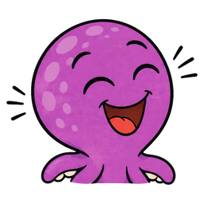

<!doctype html>
<html lang="de">
<head>
<meta charset="utf-8">
<meta name="viewport" content="width=device-width, initial-scale=1, viewport-fit=cover">
<title>Ottos Schach-Training</title>
<meta name="description" content="Ottos Schach-Training zum Buch „Ich kann Schach!“: 60 neue Rätsel mit Sofort-Antwort, Sammel-Spiel, Bauern-Spiele und Partien gegen Otto.">
<meta name="robots" content="noindex">
<meta name="theme-color" content="#3A9D5D">
<link rel="manifest" href="manifest.webmanifest">
<link rel="icon" href="icon-192.png" type="image/png">
<link rel="apple-touch-icon" href="icon-180.png">
<meta name="apple-mobile-web-app-capable" content="yes">
<meta name="mobile-web-app-capable" content="yes">
<meta name="apple-mobile-web-app-title" content="Otto-Schach">
<style>
:root {
  --creme: #FFFBF2; --papier: #FFFFFF; --text: #2B2B2B; --leise: #5E5E5E;
  --gruen: #3A9D5D; --gruen-hell: #E6F4EA; --orange: #F28C28; --orange-hell: #FDEBD9;
  --blau: #2F7FC1; --blau-hell: #E3EFF9; --lila: #9B5DE5; --lila-hell: #F1E8FB; --rot: #D62828;
  --feld-hell: #F4E9CF; --feld-dunkel: #7FAE8F; --rahmen: #3E5C4B; --gold: #F6C343;
  color-scheme: light;
}
* { box-sizing: border-box; -webkit-tap-highlight-color: transparent; }
html, body { margin: 0; background: var(--creme); color: var(--text); }
body { font-family: ui-rounded, "SF Pro Rounded", "Nunito", "Avenir Next", system-ui, -apple-system, "Segoe UI", Roboto, sans-serif;
  font-size: 17px; line-height: 1.4; min-height: 100vh; }
main { max-width: 560px; margin: 0 auto; padding: 12px 16px calc(28px + env(safe-area-inset-bottom)); }
button { font: inherit; color: inherit; cursor: pointer; }
h1 { font-size: 26px; margin: 6px 0 4px; line-height: 1.15; }
h2 { font-size: 21px; margin: 4px 0 8px; }
.kopfzeile { display: flex; align-items: center; gap: 10px; min-height: 48px; margin-bottom: 6px; }
.zurueck { border: 0; background: var(--papier); border-radius: 999px; padding: 10px 16px; font-weight: 700;
  box-shadow: 0 1px 3px #0002; min-height: 44px; }
.kopfzeile .titel { font-weight: 800; font-size: 19px; flex: 1; }
.otto { display: flex; gap: 10px; align-items: flex-start; margin: 8px 0 12px; }
.otto img { width: 64px; height: 64px; flex: none; }
.blase { background: var(--lila-hell); border-radius: 16px; padding: 10px 14px; font-weight: 650; position: relative; flex: 1; min-height: 52px; }
.blase::before { content: ""; position: absolute; left: -8px; top: 18px; border: 8px solid transparent; border-right-color: var(--lila-hell); border-left: 0; }
.blase.gut { background: var(--gruen-hell); } .blase.gut::before { border-right-color: var(--gruen-hell); }
.blase.halt { background: var(--orange-hell); } .blase.halt::before { border-right-color: var(--orange-hell); }
.kacheln { display: grid; gap: 12px; margin-top: 6px; }
.kachel { display: flex; align-items: center; gap: 14px; text-align: left; border: 0; border-radius: 18px; padding: 14px 16px;
  background: var(--papier); box-shadow: 0 2px 6px #0001, 0 0 0 2px var(--rand, #ddd) inset; min-height: 78px; width: 100%; }
.kachel .icon { width: 52px; height: 52px; flex: none; border-radius: 14px; display: grid; place-items: center; background: var(--hell, #eee); }
.kachel .icon img { width: 44px; height: 44px; }
.kachel b { font-size: 19px; display: block; }
.kachel small { color: var(--leise); font-size: 15px; display: block; }
.kachel .sterne { margin-left: auto; font-weight: 800; color: #B8860B; white-space: nowrap; font-size: 15px; }
.klein-link { display: block; margin: 18px auto 0; background: none; border: 0; color: var(--blau); font-weight: 700; text-decoration: underline; min-height: 44px; }
/* Brett */
.brett-huelle { width: min(100%, 460px); margin: 0 auto; padding: 5px; background: var(--rahmen); border-radius: 10px; }
.brett { display: grid; grid-template-columns: repeat(8, 1fr); aspect-ratio: 1; border-radius: 6px; overflow: hidden; touch-action: manipulation; }
.feld { position: relative; border: 0; padding: 0; margin: 0; aspect-ratio: 1; display: grid; place-items: center; }
.feld.hell { background: var(--feld-hell); } .feld.dunkel { background: var(--feld-dunkel); }
.feld img { width: 88%; height: 88%; pointer-events: none; user-select: none; -webkit-user-drag: none; z-index: 2; }
.feld .ko { position: absolute; font-size: 10px; font-weight: 800; opacity: .75; pointer-events: none; z-index: 1; }
.feld .ko.z { left: 3px; top: 1px; } .feld .ko.b { right: 3px; bottom: 0; }
.feld.hell .ko { color: var(--feld-dunkel); } .feld.dunkel .ko { color: var(--feld-hell); }
.feld.letzter::after { content: ""; position: absolute; inset: 0; background: #F6C34366; }
.feld.auswahl::after { content: ""; position: absolute; inset: 0; background: #2F7FC155; box-shadow: inset 0 0 0 3px var(--blau); }
.feld.tipp::after { content: ""; position: absolute; inset: 0; box-shadow: inset 0 0 0 4px var(--orange); background: #F28C2833; }
.feld.schach::after { content: ""; position: absolute; inset: 0; background: radial-gradient(circle, #D6282899 30%, transparent 72%); }
.feld .punkt { position: absolute; width: 28%; height: 28%; border-radius: 50%; background: #1E3A2B55; z-index: 3; pointer-events: none; }
.feld .ring { position: absolute; inset: 6%; border-radius: 50%; border: 4px solid #1E3A2B55; z-index: 3; pointer-events: none; }
.status { text-align: center; font-weight: 750; margin: 10px 0 4px; min-height: 24px; }
.leiste { display: flex; gap: 10px; justify-content: center; flex-wrap: wrap; margin-top: 12px; }
.knopf { border: 0; border-radius: 999px; padding: 12px 20px; font-weight: 800; background: var(--papier); box-shadow: 0 1px 4px #0002, 0 0 0 2px #ccc inset; min-height: 48px; }
.knopf.haupt { background: var(--gruen); color: #fff; box-shadow: 0 2px 6px #3A9D5D55; }
.knopf.blau { background: var(--blau); color: #fff; box-shadow: none; }
.knopf:disabled { opacity: .4; }
.wahl { display: flex; gap: 8px; justify-content: center; flex-wrap: wrap; margin: 8px 0; }
.wahl button { border: 0; border-radius: 14px; padding: 10px 14px; background: var(--papier); box-shadow: 0 0 0 2px #ccc inset; font-weight: 750; min-height: 48px; }
.wahl button.an { box-shadow: 0 0 0 3px var(--gruen) inset; background: var(--gruen-hell); }
.wahl button img { width: 40px; height: 40px; display: block; margin: 0 auto 2px; }
.raster { display: grid; grid-template-columns: repeat(4, 1fr); gap: 10px; }
.raster button { border: 0; border-radius: 14px; background: var(--papier); box-shadow: 0 0 0 2px #ddd inset; min-height: 70px; font-weight: 800; font-size: 20px; }
.raster button small { display: block; font-size: 14px; color: #B8860B; letter-spacing: 1px; }
.raster button.offen { box-shadow: 0 0 0 3px var(--farbe, var(--gruen)) inset; }
.zaehler { display: flex; justify-content: center; gap: 18px; font-weight: 800; margin-top: 8px; }
.ergebnis { text-align: center; background: var(--papier); border-radius: 18px; padding: 14px; margin-top: 12px; box-shadow: 0 2px 8px #0001; }
.ergebnis .gross { font-size: 30px; letter-spacing: 3px; color: #E0A800; }
.text p { margin: 0 0 10px; }
.text a { color: var(--blau); font-weight: 700; }
.kasten { background: var(--papier); border-radius: 14px; padding: 12px 14px; margin: 10px 0; box-shadow: 0 1px 4px #0001; }
.fusszeile { text-align: center; color: var(--leise); font-size: 13px; margin-top: 22px; }
.fusszeile a { color: var(--leise); }
.dialog { position: fixed; inset: 0; background: #0006; display: grid; place-items: center; padding: 16px; z-index: 20; }
.dialog .karte { background: var(--creme); border-radius: 20px; padding: 18px; max-width: 420px; width: 100%; text-align: center; box-shadow: 0 10px 30px #0004; }
.dialog .karte img { width: 110px; height: 110px; }
@keyframes huepf { 0%, 100% { transform: translateY(0); } 50% { transform: translateY(-6px); } }
.huepft { animation: huepf .5s ease 2; }
</style>
</head>
<body>
<main id="app"></main>

<script type="module">
import { Chess } from './chess.js';

const STUFEN = [{"id": "schach", "name": "Gib Schach!", "buch": "Lektion 13", "farbe": "#F28C28", "raetsel": [{"fen": "5B2/8/8/1N6/k7/8/K7/8 w - - 0 1", "loesung": "b5c3", "frage": "Gib Schach! Aber so, dass Schwarz deine Figur nicht schlagen kann.", "erklaerung": "Richtig! Springer nach c3: Schach!"}, {"fen": "5k1K/B4B2/8/8/8/8/8/8 w - - 0 1", "loesung": "a7c5", "frage": "Gib Schach! Aber so, dass Schwarz deine Figur nicht schlagen kann.", "erklaerung": "Richtig! Läufer nach c5: Schach!"}, {"fen": "K3k3/7B/8/8/5N2/8/8/8 w - - 0 1", "loesung": "h7g6", "frage": "Gib Schach! Aber so, dass Schwarz deine Figur nicht schlagen kann.", "erklaerung": "Richtig! Läufer nach g6: Schach!"}, {"fen": "8/6N1/8/8/8/8/1KB3k1/8 w - - 0 1", "loesung": "c2e4", "frage": "Gib Schach! Aber so, dass Schwarz deine Figur nicht schlagen kann.", "erklaerung": "Richtig! Läufer nach e4: Schach!"}, {"fen": "8/8/8/7k/5K2/2N5/B7/8 w - - 0 1", "loesung": "a2f7", "frage": "Gib Schach! Aber so, dass Schwarz deine Figur nicht schlagen kann.", "erklaerung": "Richtig! Läufer nach f7: Schach!"}, {"fen": "5R2/8/8/7K/8/7k/8/6B1 w - - 0 1", "loesung": "f8f3", "frage": "Gib Schach! Aber so, dass Schwarz deine Figur nicht schlagen kann.", "erklaerung": "Richtig! Turm nach f3: Schach!"}, {"fen": "5B2/8/6K1/6p1/8/8/7k/2N5 w - - 0 1", "loesung": "f8d6", "frage": "Gib Schach! Aber so, dass Schwarz deine Figur nicht schlagen kann.", "erklaerung": "Richtig! Läufer nach d6: Schach!"}, {"fen": "2k5/p7/8/8/4K3/R7/8/3N4 w - - 0 1", "loesung": "a3c3", "frage": "Gib Schach! Aber so, dass Schwarz deine Figur nicht schlagen kann.", "erklaerung": "Richtig! Turm nach c3: Schach!"}, {"fen": "8/p4N2/8/7K/5p2/k7/8/6B1 w - - 0 1", "loesung": "g1c5", "frage": "Gib Schach! Aber so, dass Schwarz deine Figur nicht schlagen kann.", "erklaerung": "Richtig! Läufer nach c5: Schach!"}, {"fen": "8/8/3p4/6B1/R2K4/8/6p1/3k4 w - - 0 1", "loesung": "a4a1", "frage": "Gib Schach! Aber so, dass Schwarz deine Figur nicht schlagen kann.", "erklaerung": "Richtig! Turm nach a1: Schach!"}, {"fen": "8/6p1/7k/4K2N/3p4/8/8/1R6 w - - 0 1", "loesung": "b1b6", "frage": "Gib Schach! Aber so, dass Schwarz deine Figur nicht schlagen kann.", "erklaerung": "Richtig! Turm nach b6: Schach!"}, {"fen": "8/8/8/p7/6K1/k1p1N3/2B5/4N3 w - - 0 1", "loesung": "e3c4", "frage": "Gib Schach! Aber so, dass Schwarz deine Figur nicht schlagen kann.", "erklaerung": "Richtig! Springer nach c4: Schach!"}]}, {"id": "raus", "name": "Rette deinen König!", "buch": "Lektion 14", "farbe": "#2F7FC1", "raetsel": [{"fen": "6Q1/8/8/8/8/2b5/2k5/K7 w - - 0 1", "loesung": "a1a2", "frage": "Dein König steht im Schach! Nur ein Zug rettet ihn. Findest du ihn?", "erklaerung": "Richtig! König nach a2. Der König läuft aus dem Schach."}, {"fen": "4Kq2/3P4/8/8/8/2n5/8/1k6 w - - 0 1", "loesung": "e8f8", "frage": "Dein König steht im Schach! Nur ein Zug rettet ihn. Findest du ihn?", "erklaerung": "Richtig! König schlägt Dame auf f8. Du schlägst die Figur, die Schach gibt."}, {"fen": "8/2k5/p7/4R3/2P5/8/2r5/K5q1 w - - 0 1", "loesung": "e5e1", "frage": "Dein König steht im Schach! Nur ein Zug rettet ihn. Findest du ihn?", "erklaerung": "Richtig! Turm nach e1. Du stellst eine Figur dazwischen."}, {"fen": "8/7q/8/8/1Q1B3K/5k2/8/8 w - - 0 1", "loesung": "h4g5", "frage": "Dein König steht im Schach! Nur ein Zug rettet ihn. Findest du ihn?", "erklaerung": "Richtig! König nach g5. Der König läuft aus dem Schach."}, {"fen": "6q1/5Kp1/4r2k/8/5P2/8/8/8 w - - 0 1", "loesung": "f7g8", "frage": "Dein König steht im Schach! Nur ein Zug rettet ihn. Findest du ihn?", "erklaerung": "Richtig! König schlägt Dame auf g8. Du schlägst die Figur, die Schach gibt."}, {"fen": "7r/8/8/4p3/2Q5/5k1K/8/8 w - - 0 1", "loesung": "c4h4", "frage": "Dein König steht im Schach! Nur ein Zug rettet ihn. Findest du ihn?", "erklaerung": "Richtig! Dame nach h4. Du stellst eine Figur dazwischen."}, {"fen": "8/K7/1q1r3k/8/8/2Q5/8/8 w - - 0 1", "loesung": "a7a8", "frage": "Dein König steht im Schach! Nur ein Zug rettet ihn. Findest du ihn?", "erklaerung": "Richtig! König nach a8. Der König läuft aus dem Schach."}, {"fen": "7K/7q/5R2/8/8/8/7k/8 w - - 0 1", "loesung": "h8h7", "frage": "Dein König steht im Schach! Nur ein Zug rettet ihn. Findest du ihn?", "erklaerung": "Richtig! König schlägt Dame auf h7. Du schlägst die Figur, die Schach gibt."}, {"fen": "6KN/8/p6k/8/5q2/6r1/8/8 w - - 0 1", "loesung": "h8g6", "frage": "Dein König steht im Schach! Nur ein Zug rettet ihn. Findest du ihn?", "erklaerung": "Richtig! Springer nach g6. Du stellst eine Figur dazwischen."}, {"fen": "2B5/4R1r1/8/8/8/3k4/8/1r2K3 w - - 0 1", "loesung": "e1f2", "frage": "Dein König steht im Schach! Nur ein Zug rettet ihn. Findest du ihn?", "erklaerung": "Richtig! König nach f2. Der König läuft aus dem Schach."}, {"fen": "3b4/7q/1R5K/8/4k3/8/8/8 w - - 0 1", "loesung": "h6h7", "frage": "Dein König steht im Schach! Nur ein Zug rettet ihn. Findest du ihn?", "erklaerung": "Richtig! König schlägt Dame auf h7. Du schlägst die Figur, die Schach gibt."}, {"fen": "5k2/1R6/q4K2/r7/8/8/8/8 w - - 0 1", "loesung": "b7b6", "frage": "Dein König steht im Schach! Nur ein Zug rettet ihn. Findest du ihn?", "erklaerung": "Richtig! Turm nach b6. Du stellst eine Figur dazwischen."}]}, {"id": "matt1", "name": "Matt in einem Zug", "buch": "Lektion 15, 20, 21, 23", "farbe": "#3A9D5D", "raetsel": [{"fen": "8/7R/8/2K5/8/8/2R5/k7 w - - 0 1", "loesung": "h7h1", "frage": "Setz Schwarz schachmatt, mit nur einem Zug!", "erklaerung": "Richtig! Turm nach h1: Schachmatt!"}, {"fen": "8/3R4/8/8/8/7K/2R5/k7 w - - 0 1", "loesung": "d7d1", "frage": "Setz Schwarz schachmatt, mit nur einem Zug!", "erklaerung": "Richtig! Turm nach d1: Schachmatt!"}, {"fen": "7k/8/R7/8/8/8/1K4R1/8 w - - 0 1", "loesung": "a6h6", "frage": "Setz Schwarz schachmatt, mit nur einem Zug!", "erklaerung": "Richtig! Turm nach h6: Schachmatt!"}, {"fen": "3R4/8/8/4K3/8/6R1/8/7k w - - 0 1", "loesung": "d8h8", "frage": "Setz Schwarz schachmatt, mit nur einem Zug!", "erklaerung": "Richtig! Turm nach h8: Schachmatt!"}, {"fen": "5k2/1R6/8/8/6K1/R7/8/8 w - - 0 1", "loesung": "a3a8", "frage": "Setz Schwarz schachmatt, mit nur einem Zug!", "erklaerung": "Richtig! Turm nach a8: Schachmatt!"}, {"fen": "7k/6pp/8/7Q/8/8/8/4K3 w - - 0 1", "loesung": "h5e8", "frage": "Setz Schwarz schachmatt, mit nur einem Zug!", "erklaerung": "Richtig! Dame nach e8: Schachmatt!"}, {"fen": "1k6/pp1K4/1Q6/8/8/8/8/8 w - - 0 1", "loesung": "b6d8", "frage": "Setz Schwarz schachmatt, mit nur einem Zug!", "erklaerung": "Richtig! Dame nach d8: Schachmatt!"}, {"fen": "7k/6pp/8/8/8/3Q4/8/4K3 w - - 0 1", "loesung": "d3d8", "frage": "Setz Schwarz schachmatt, mit nur einem Zug!", "erklaerung": "Richtig! Dame nach d8: Schachmatt!"}, {"fen": "7k/7p/K7/8/8/6R1/8/5R2 w - - 0 1", "loesung": "f1f8", "frage": "Setz Schwarz schachmatt, mit nur einem Zug!", "erklaerung": "Richtig! Turm nach f8: Schachmatt!"}, {"fen": "5k2/3Kppp1/8/8/8/1Q6/8/8 w - - 0 1", "loesung": "b3b8", "frage": "Setz Schwarz schachmatt, mit nur einem Zug!", "erklaerung": "Richtig! Dame nach b8: Schachmatt!"}, {"fen": "6k1/5ppp/8/8/1Q6/8/8/7K w - - 0 1", "loesung": "b4b8", "frage": "Setz Schwarz schachmatt, mit nur einem Zug!", "erklaerung": "Richtig! Dame nach b8: Schachmatt!"}, {"fen": "2k5/1ppp4/8/7K/8/8/1Q6/8 w - - 0 1", "loesung": "b2h8", "frage": "Setz Schwarz schachmatt, mit nur einem Zug!", "erklaerung": "Richtig! Dame nach h8: Schachmatt!"}]}, {"id": "matt2", "name": "Kniffliges Matt", "buch": "Teil 4", "farbe": "#8E44AD", "raetsel": [{"fen": "1B1k1K2/8/8/8/5p2/p7/4Q3/8 w - - 0 1", "loesung": "e2e8", "frage": "Setz Schwarz schachmatt, mit nur einem Zug!", "erklaerung": "Richtig! Dame nach e8: Schachmatt!"}, {"fen": "8/8/k7/1N6/B3p3/8/8/K5Q1 w - - 0 1", "loesung": "g1a7", "frage": "Setz Schwarz schachmatt, mit nur einem Zug!", "erklaerung": "Richtig! Dame nach a7: Schachmatt!"}, {"fen": "3K1k2/n2pN3/8/8/2Q5/8/8/8 w - - 0 1", "loesung": "c4g8", "frage": "Setz Schwarz schachmatt, mit nur einem Zug!", "erklaerung": "Richtig! Dame nach g8: Schachmatt!"}, {"fen": "8/Q1pN1K1k/8/R7/8/8/8/8 w - - 0 1", "loesung": "a5h5", "frage": "Setz Schwarz schachmatt, mit nur einem Zug!", "erklaerung": "Richtig! Turm nach h5: Schachmatt!"}, {"fen": "4k3/8/2K5/5Q2/8/5R1N/8/3r4 w - - 0 1", "loesung": "f5f8", "frage": "Setz Schwarz schachmatt, mit nur einem Zug!", "erklaerung": "Richtig! Dame nach f8: Schachmatt!"}, {"fen": "3B4/2Q5/k7/8/8/2R5/8/1K1b4 w - - 0 1", "loesung": "c7b6", "frage": "Setz Schwarz schachmatt, mit nur einem Zug!", "erklaerung": "Richtig! Dame nach b6: Schachmatt!"}, {"fen": "5K2/8/1Q6/8/3B1R2/p7/k7/8 w - - 0 1", "loesung": "f4f2", "frage": "Setz Schwarz schachmatt, mit nur einem Zug!", "erklaerung": "Richtig! Turm nach f2: Schachmatt!"}, {"fen": "8/6R1/8/1B2Q3/7k/8/1n2K3/8 w - - 0 1", "loesung": "e5h2", "frage": "Setz Schwarz schachmatt, mit nur einem Zug!", "erklaerung": "Richtig! Dame nach h2: Schachmatt!"}, {"fen": "8/6p1/8/3P3p/8/8/k1K3B1/5Q2 w - - 0 1", "loesung": "f1a6", "frage": "Setz Schwarz schachmatt, mit nur einem Zug!", "erklaerung": "Richtig! Dame nach a6: Schachmatt!"}, {"fen": "3k4/8/2Q5/4R3/p7/5Np1/8/K7 w - - 0 1", "loesung": "e5e8", "frage": "Setz Schwarz schachmatt, mit nur einem Zug!", "erklaerung": "Richtig! Turm nach e8: Schachmatt!"}, {"fen": "8/1B6/8/6R1/3Q2K1/8/6p1/r6k w - - 0 1", "loesung": "g5h5", "frage": "Setz Schwarz schachmatt, mit nur einem Zug!", "erklaerung": "Richtig! Turm nach h5: Schachmatt!"}, {"fen": "1k6/6Q1/P2K2B1/2p4p/8/7n/8/8 w - - 0 1", "loesung": "g7b7", "frage": "Setz Schwarz schachmatt, mit nur einem Zug!", "erklaerung": "Richtig! Dame nach b7: Schachmatt!"}]}, {"id": "gabel", "name": "Finde die Gabel", "buch": "Lektion 25", "farbe": "#E4572E", "raetsel": [{"fen": "8/5r2/3P4/8/2N3k1/1K6/8/8 w - - 0 1", "loesung": "c4e5", "frage": "Finde die Springer-Gabel! Deine Figur darf danach nicht geschlagen werden.", "erklaerung": "Richtig! Springer nach e5. Schach! Du greifst den König und den Turm an."}, {"fen": "N1r5/3k4/8/1K6/7p/7q/8/8 w - - 0 1", "loesung": "a8b6", "frage": "Finde die Springer-Gabel! Deine Figur darf danach nicht geschlagen werden.", "erklaerung": "Richtig! Springer nach b6. Schach! Du greifst den König und den Turm an."}, {"fen": "8/3q4/8/r7/4k1Np/8/4K3/8 w - - 0 1", "loesung": "g4f6", "frage": "Finde die Springer-Gabel! Deine Figur darf danach nicht geschlagen werden.", "erklaerung": "Richtig! Springer nach f6. Schach! Du greifst den König und die Dame an."}, {"fen": "8/5pp1/1K6/4r3/8/1N6/2k1q3/8 w - - 0 1", "loesung": "b3d4", "frage": "Finde die Springer-Gabel! Deine Figur darf danach nicht geschlagen werden.", "erklaerung": "Richtig! Springer nach d4. Schach! Du greifst den König und die Dame an."}, {"fen": "2b5/4P3/6k1/4P3/7K/8/8/r7 w - - 0 1", "loesung": "e7e8q", "frage": "Finde die Bauern-Gabel! Deine Figur darf danach nicht geschlagen werden.", "erklaerung": "Richtig! Bauer nach e8, und aus dem Bauern wird eine Dame. Schach! Du greifst den König und den Läufer an."}, {"fen": "8/8/6r1/8/8/3N1k2/3K4/8 w - - 0 1", "loesung": "d3e5", "frage": "Finde die Springer-Gabel! Deine Figur darf danach nicht geschlagen werden.", "erklaerung": "Richtig! Springer nach e5. Schach! Du greifst den König und den Turm an."}, {"fen": "8/8/3k4/8/p3P2N/6r1/4K3/8 w - - 0 1", "loesung": "h4f5", "frage": "Finde die Springer-Gabel! Deine Figur darf danach nicht geschlagen werden.", "erklaerung": "Richtig! Springer nach f5. Schach! Du greifst den König und den Turm an."}, {"fen": "8/8/5p2/p1N5/6K1/8/4Pk2/2r5 w - - 0 1", "loesung": "c5d3", "frage": "Finde die Springer-Gabel! Deine Figur darf danach nicht geschlagen werden.", "erklaerung": "Richtig! Springer nach d3. Schach! Du greifst den König und den Turm an."}, {"fen": "8/3kpp1P/2r4r/8/2NK4/8/8/8 w - - 0 1", "loesung": "c4e5", "frage": "Finde die Springer-Gabel! Deine Figur darf danach nicht geschlagen werden.", "erklaerung": "Richtig! Springer nach e5. Schach! Du greifst den König und den Turm an."}, {"fen": "4r3/8/8/7k/8/3Q4/8/3K4 w - - 0 1", "loesung": "d3b5", "frage": "Finde eine Gabel mit der Dame! Deine Figur darf danach nicht geschlagen werden.", "erklaerung": "Richtig! Dame nach b5. Schach! Du greifst den König und den Turm an."}, {"fen": "1k6/n2P4/5r2/8/6K1/8/2P5/8 w - - 0 1", "loesung": "d7d8q", "frage": "Finde die Bauern-Gabel! Deine Figur darf danach nicht geschlagen werden.", "erklaerung": "Richtig! Bauer nach d8, und aus dem Bauern wird eine Dame. Schach! Du greifst den König und den Turm an."}, {"fen": "6k1/r7/8/8/8/8/1Q1K4/8 w - - 0 1", "loesung": "b2b8", "frage": "Finde eine Gabel mit der Dame! Deine Figur darf danach nicht geschlagen werden.", "erklaerung": "Richtig! Dame nach b8. Schach! Du greifst den König und den Turm an."}]}];
const FIG = {"wK": "data:image/svg+xml;utf8,%3Csvg%20xmlns%3D%22http%3A//www.w3.org/2000/svg%22%20xmlns%3Axlink%3D%22http%3A//www.w3.org/1999/xlink%22%20viewBox%3D%220%200%2045%2045%22%3E%3Cg%20id%3D%22white-king%22%20class%3D%22white%20king%22%20fill%3D%22none%22%20fill-rule%3D%22evenodd%22%20stroke%3D%22%23000%22%20stroke-width%3D%221.5%22%20stroke-linecap%3D%22round%22%20stroke-linejoin%3D%22round%22%3E%3Cpath%20d%3D%22M22.5%2011.63V6M20%208h5%22%20stroke-linejoin%3D%22miter%22%20/%3E%3Cpath%20d%3D%22M22.5%2025s4.5-7.5%203-10.5c0%200-1-2.5-3-2.5s-3%202.5-3%202.5c-1.5%203%203%2010.5%203%2010.5%22%20fill%3D%22%23fff%22%20stroke-linecap%3D%22butt%22%20stroke-linejoin%3D%22miter%22%20/%3E%3Cpath%20d%3D%22M11.5%2037c5.5%203.5%2015.5%203.5%2021%200v-7s9-4.5%206-10.5c-4-6.5-13.5-3.5-16%204V27v-3.5c-3.5-7.5-13-10.5-16-4-3%206%205%2010%205%2010V37z%22%20fill%3D%22%23fff%22%20/%3E%3Cpath%20d%3D%22M11.5%2030c5.5-3%2015.5-3%2021%200m-21%203.5c5.5-3%2015.5-3%2021%200m-21%203.5c5.5-3%2015.5-3%2021%200%22%20/%3E%3C/g%3E%3C/svg%3E", "wQ": "data:image/svg+xml;utf8,%3Csvg%20xmlns%3D%22http%3A//www.w3.org/2000/svg%22%20xmlns%3Axlink%3D%22http%3A//www.w3.org/1999/xlink%22%20viewBox%3D%220%200%2045%2045%22%3E%3Cg%20id%3D%22white-queen%22%20class%3D%22white%20queen%22%20fill%3D%22%23fff%22%20fill-rule%3D%22evenodd%22%20stroke%3D%22%23000%22%20stroke-width%3D%221.5%22%20stroke-linecap%3D%22round%22%20stroke-linejoin%3D%22round%22%3E%3Cpath%20d%3D%22M8%2012a2%202%200%201%201-4%200%202%202%200%201%201%204%200zM24.5%207.5a2%202%200%201%201-4%200%202%202%200%201%201%204%200zM41%2012a2%202%200%201%201-4%200%202%202%200%201%201%204%200zM16%208.5a2%202%200%201%201-4%200%202%202%200%201%201%204%200zM33%209a2%202%200%201%201-4%200%202%202%200%201%201%204%200z%22%20/%3E%3Cpath%20d%3D%22M9%2026c8.5-1.5%2021-1.5%2027%200l2-12-7%2011V11l-5.5%2013.5-3-15-3%2015-5.5-14V25L7%2014l2%2012zM9%2026c0%202%201.5%202%202.5%204%201%201.5%201%201%20.5%203.5-1.5%201-1.5%202.5-1.5%202.5-1.5%201.5.5%202.5.5%202.5%206.5%201%2016.5%201%2023%200%200%200%201.5-1%200-2.5%200%200%20.5-1.5-1-2.5-.5-2.5-.5-2%20.5-3.5%201-2%202.5-2%202.5-4-8.5-1.5-18.5-1.5-27%200z%22%20stroke-linecap%3D%22butt%22%20/%3E%3Cpath%20d%3D%22M11.5%2030c3.5-1%2018.5-1%2022%200M12%2033.5c6-1%2015-1%2021%200%22%20fill%3D%22none%22%20/%3E%3C/g%3E%3C/svg%3E", "wR": "data:image/svg+xml;utf8,%3Csvg%20xmlns%3D%22http%3A//www.w3.org/2000/svg%22%20xmlns%3Axlink%3D%22http%3A//www.w3.org/1999/xlink%22%20viewBox%3D%220%200%2045%2045%22%3E%3Cg%20id%3D%22white-rook%22%20class%3D%22white%20rook%22%20fill%3D%22%23fff%22%20fill-rule%3D%22evenodd%22%20stroke%3D%22%23000%22%20stroke-width%3D%221.5%22%20stroke-linecap%3D%22round%22%20stroke-linejoin%3D%22round%22%3E%3Cpath%20d%3D%22M9%2039h27v-3H9v3zM12%2036v-4h21v4H12zM11%2014V9h4v2h5V9h5v2h5V9h4v5%22%20stroke-linecap%3D%22butt%22%20/%3E%3Cpath%20d%3D%22M34%2014l-3%203H14l-3-3%22%20/%3E%3Cpath%20d%3D%22M31%2017v12.5H14V17%22%20stroke-linecap%3D%22butt%22%20stroke-linejoin%3D%22miter%22%20/%3E%3Cpath%20d%3D%22M31%2029.5l1.5%202.5h-20l1.5-2.5%22%20/%3E%3Cpath%20d%3D%22M11%2014h23%22%20fill%3D%22none%22%20stroke-linejoin%3D%22miter%22%20/%3E%3C/g%3E%3C/svg%3E", "wB": "data:image/svg+xml;utf8,%3Csvg%20xmlns%3D%22http%3A//www.w3.org/2000/svg%22%20xmlns%3Axlink%3D%22http%3A//www.w3.org/1999/xlink%22%20viewBox%3D%220%200%2045%2045%22%3E%3Cg%20id%3D%22white-bishop%22%20class%3D%22white%20bishop%22%20fill%3D%22none%22%20fill-rule%3D%22evenodd%22%20stroke%3D%22%23000%22%20stroke-width%3D%221.5%22%20stroke-linecap%3D%22round%22%20stroke-linejoin%3D%22round%22%3E%3Cg%20fill%3D%22%23fff%22%20stroke-linecap%3D%22butt%22%3E%3Cpath%20d%3D%22M9%2036c3.39-.97%2010.11.43%2013.5-2%203.39%202.43%2010.11%201.03%2013.5%202%200%200%201.65.54%203%202-.68.97-1.65.99-3%20.5-3.39-.97-10.11.46-13.5-1-3.39%201.46-10.11.03-13.5%201-1.354.49-2.323.47-3-.5%201.354-1.94%203-2%203-2zM15%2032c2.5%202.5%2012.5%202.5%2015%200%20.5-1.5%200-2%200-2%200-2.5-2.5-4-2.5-4%205.5-1.5%206-11.5-5-15.5-11%204-10.5%2014-5%2015.5%200%200-2.5%201.5-2.5%204%200%200-.5.5%200%202zM25%208a2.5%202.5%200%201%201-5%200%202.5%202.5%200%201%201%205%200z%22%20/%3E%3C/g%3E%3Cpath%20d%3D%22M17.5%2026h10M15%2030h15m-7.5-14.5v5M20%2018h5%22%20stroke-linejoin%3D%22miter%22%20/%3E%3C/g%3E%3C/svg%3E", "wN": "data:image/svg+xml;utf8,%3Csvg%20xmlns%3D%22http%3A//www.w3.org/2000/svg%22%20xmlns%3Axlink%3D%22http%3A//www.w3.org/1999/xlink%22%20viewBox%3D%220%200%2045%2045%22%3E%3Cg%20id%3D%22white-knight%22%20class%3D%22white%20knight%22%20fill%3D%22none%22%20fill-rule%3D%22evenodd%22%20stroke%3D%22%23000%22%20stroke-width%3D%221.5%22%20stroke-linecap%3D%22round%22%20stroke-linejoin%3D%22round%22%3E%3Cpath%20d%3D%22M%2022%2C10%20C%2032.5%2C11%2038.5%2C18%2038%2C39%20L%2015%2C39%20C%2015%2C30%2025%2C32.5%2023%2C18%22%20style%3D%22fill%3A%23ffffff%3B%20stroke%3A%23000000%3B%22%20/%3E%3Cpath%20d%3D%22M%2024%2C18%20C%2024.38%2C20.91%2018.45%2C25.37%2016%2C27%20C%2013%2C29%2013.18%2C31.34%2011%2C31%20C%209.958%2C30.06%2012.41%2C27.96%2011%2C28%20C%2010%2C28%2011.19%2C29.23%2010%2C30%20C%209%2C30%205.997%2C31%206%2C26%20C%206%2C24%2012%2C14%2012%2C14%20C%2012%2C14%2013.89%2C12.1%2014%2C10.5%20C%2013.27%2C9.506%2013.5%2C8.5%2013.5%2C7.5%20C%2014.5%2C6.5%2016.5%2C10%2016.5%2C10%20L%2018.5%2C10%20C%2018.5%2C10%2019.28%2C8.008%2021%2C7%20C%2022%2C7%2022%2C10%2022%2C10%22%20style%3D%22fill%3A%23ffffff%3B%20stroke%3A%23000000%3B%22%20/%3E%3Cpath%20d%3D%22M%209.5%2025.5%20A%200.5%200.5%200%201%201%208.5%2C25.5%20A%200.5%200.5%200%201%201%209.5%2025.5%20z%22%20style%3D%22fill%3A%23000000%3B%20stroke%3A%23000000%3B%22%20/%3E%3Cpath%20d%3D%22M%2015%2015.5%20A%200.5%201.5%200%201%201%2014%2C15.5%20A%200.5%201.5%200%201%201%2015%2015.5%20z%22%20transform%3D%22matrix%280.866%2C0.5%2C-0.5%2C0.866%2C9.693%2C-5.173%29%22%20style%3D%22fill%3A%23000000%3B%20stroke%3A%23000000%3B%22%20/%3E%3C/g%3E%3C/svg%3E", "wP": "data:image/svg+xml;utf8,%3Csvg%20xmlns%3D%22http%3A//www.w3.org/2000/svg%22%20xmlns%3Axlink%3D%22http%3A//www.w3.org/1999/xlink%22%20viewBox%3D%220%200%2045%2045%22%3E%3Cg%20id%3D%22white-pawn%22%20class%3D%22white%20pawn%22%3E%3Cpath%20d%3D%22M22.5%209c-2.21%200-4%201.79-4%204%200%20.89.29%201.71.78%202.38C17.33%2016.5%2016%2018.59%2016%2021c0%202.03.94%203.84%202.41%205.03-3%201.06-7.41%205.55-7.41%2013.47h23c0-7.92-4.41-12.41-7.41-13.47%201.47-1.19%202.41-3%202.41-5.03%200-2.41-1.33-4.5-3.28-5.62.49-.67.78-1.49.78-2.38%200-2.21-1.79-4-4-4z%22%20fill%3D%22%23fff%22%20stroke%3D%22%23000%22%20stroke-width%3D%221.5%22%20stroke-linecap%3D%22round%22%20/%3E%3C/g%3E%3C/svg%3E", "bK": "data:image/svg+xml;utf8,%3Csvg%20xmlns%3D%22http%3A//www.w3.org/2000/svg%22%20xmlns%3Axlink%3D%22http%3A//www.w3.org/1999/xlink%22%20viewBox%3D%220%200%2045%2045%22%3E%3Cg%20id%3D%22black-king%22%20class%3D%22black%20king%22%20fill%3D%22none%22%20fill-rule%3D%22evenodd%22%20stroke%3D%22%23000%22%20stroke-width%3D%221.5%22%20stroke-linecap%3D%22round%22%20stroke-linejoin%3D%22round%22%3E%3Cpath%20d%3D%22M22.5%2011.63V6%22%20stroke-linejoin%3D%22miter%22%20/%3E%3Cpath%20d%3D%22M22.5%2025s4.5-7.5%203-10.5c0%200-1-2.5-3-2.5s-3%202.5-3%202.5c-1.5%203%203%2010.5%203%2010.5%22%20fill%3D%22%23000%22%20stroke-linecap%3D%22butt%22%20stroke-linejoin%3D%22miter%22%20/%3E%3Cpath%20d%3D%22M11.5%2037c5.5%203.5%2015.5%203.5%2021%200v-7s9-4.5%206-10.5c-4-6.5-13.5-3.5-16%204V27v-3.5c-3.5-7.5-13-10.5-16-4-3%206%205%2010%205%2010V37z%22%20fill%3D%22%23000%22%20/%3E%3Cpath%20d%3D%22M20%208h5%22%20stroke-linejoin%3D%22miter%22%20/%3E%3Cpath%20d%3D%22M32%2029.5s8.5-4%206.03-9.65C34.15%2014%2025%2018%2022.5%2024.5l.01%202.1-.01-2.1C20%2018%209.906%2014%206.997%2019.85c-2.497%205.65%204.853%209%204.853%209M11.5%2030c5.5-3%2015.5-3%2021%200m-21%203.5c5.5-3%2015.5-3%2021%200m-21%203.5c5.5-3%2015.5-3%2021%200%22%20stroke%3D%22%23fff%22%20/%3E%3C/g%3E%3C/svg%3E", "bQ": "data:image/svg+xml;utf8,%3Csvg%20xmlns%3D%22http%3A//www.w3.org/2000/svg%22%20xmlns%3Axlink%3D%22http%3A//www.w3.org/1999/xlink%22%20viewBox%3D%220%200%2045%2045%22%3E%3Cg%20id%3D%22black-queen%22%20class%3D%22black%20queen%22%20fill%3D%22%23000%22%20fill-rule%3D%22evenodd%22%20stroke%3D%22%23000%22%20stroke-width%3D%221.5%22%20stroke-linecap%3D%22round%22%20stroke-linejoin%3D%22round%22%3E%3Cg%20fill%3D%22%23000%22%20stroke%3D%22none%22%3E%3Ccircle%20cx%3D%226%22%20cy%3D%2212%22%20r%3D%222.75%22%20/%3E%3Ccircle%20cx%3D%2214%22%20cy%3D%229%22%20r%3D%222.75%22%20/%3E%3Ccircle%20cx%3D%2222.5%22%20cy%3D%228%22%20r%3D%222.75%22%20/%3E%3Ccircle%20cx%3D%2231%22%20cy%3D%229%22%20r%3D%222.75%22%20/%3E%3Ccircle%20cx%3D%2239%22%20cy%3D%2212%22%20r%3D%222.75%22%20/%3E%3C/g%3E%3Cpath%20d%3D%22M9%2026c8.5-1.5%2021-1.5%2027%200l2.5-12.5L31%2025l-.3-14.1-5.2%2013.6-3-14.5-3%2014.5-5.2-13.6L14%2025%206.5%2013.5%209%2026zM9%2026c0%202%201.5%202%202.5%204%201%201.5%201%201%20.5%203.5-1.5%201-1.5%202.5-1.5%202.5-1.5%201.5.5%202.5.5%202.5%206.5%201%2016.5%201%2023%200%200%200%201.5-1%200-2.5%200%200%20.5-1.5-1-2.5-.5-2.5-.5-2%20.5-3.5%201-2%202.5-2%202.5-4-8.5-1.5-18.5-1.5-27%200z%22%20stroke-linecap%3D%22butt%22%20/%3E%3Cpath%20d%3D%22M11%2038.5a35%2035%201%200%200%2023%200%22%20fill%3D%22none%22%20stroke-linecap%3D%22butt%22%20/%3E%3Cpath%20d%3D%22M11%2029a35%2035%201%200%201%2023%200M12.5%2031.5h20M11.5%2034.5a35%2035%201%200%200%2022%200M10.5%2037.5a35%2035%201%200%200%2024%200%22%20fill%3D%22none%22%20stroke%3D%22%23fff%22%20/%3E%3C/g%3E%3C/svg%3E", "bR": "data:image/svg+xml;utf8,%3Csvg%20xmlns%3D%22http%3A//www.w3.org/2000/svg%22%20xmlns%3Axlink%3D%22http%3A//www.w3.org/1999/xlink%22%20viewBox%3D%220%200%2045%2045%22%3E%3Cg%20id%3D%22black-rook%22%20class%3D%22black%20rook%22%20fill%3D%22%23000%22%20fill-rule%3D%22evenodd%22%20stroke%3D%22%23000%22%20stroke-width%3D%221.5%22%20stroke-linecap%3D%22round%22%20stroke-linejoin%3D%22round%22%3E%3Cpath%20d%3D%22M9%2039h27v-3H9v3zM12.5%2032l1.5-2.5h17l1.5%202.5h-20zM12%2036v-4h21v4H12z%22%20stroke-linecap%3D%22butt%22%20/%3E%3Cpath%20d%3D%22M14%2029.5v-13h17v13H14z%22%20stroke-linecap%3D%22butt%22%20stroke-linejoin%3D%22miter%22%20/%3E%3Cpath%20d%3D%22M14%2016.5L11%2014h23l-3%202.5H14zM11%2014V9h4v2h5V9h5v2h5V9h4v5H11z%22%20stroke-linecap%3D%22butt%22%20/%3E%3Cpath%20d%3D%22M12%2035.5h21M13%2031.5h19M14%2029.5h17M14%2016.5h17M11%2014h23%22%20fill%3D%22none%22%20stroke%3D%22%23fff%22%20stroke-width%3D%221%22%20stroke-linejoin%3D%22miter%22%20/%3E%3C/g%3E%3C/svg%3E", "bB": "data:image/svg+xml;utf8,%3Csvg%20xmlns%3D%22http%3A//www.w3.org/2000/svg%22%20xmlns%3Axlink%3D%22http%3A//www.w3.org/1999/xlink%22%20viewBox%3D%220%200%2045%2045%22%3E%3Cg%20id%3D%22black-bishop%22%20class%3D%22black%20bishop%22%20fill%3D%22none%22%20fill-rule%3D%22evenodd%22%20stroke%3D%22%23000%22%20stroke-width%3D%221.5%22%20stroke-linecap%3D%22round%22%20stroke-linejoin%3D%22round%22%3E%3Cpath%20d%3D%22M9%2036c3.39-.97%2010.11.43%2013.5-2%203.39%202.43%2010.11%201.03%2013.5%202%200%200%201.65.54%203%202-.68.97-1.65.99-3%20.5-3.39-.97-10.11.46-13.5-1-3.39%201.46-10.11.03-13.5%201-1.354.49-2.323.47-3-.5%201.354-1.94%203-2%203-2zm6-4c2.5%202.5%2012.5%202.5%2015%200%20.5-1.5%200-2%200-2%200-2.5-2.5-4-2.5-4%205.5-1.5%206-11.5-5-15.5-11%204-10.5%2014-5%2015.5%200%200-2.5%201.5-2.5%204%200%200-.5.5%200%202zM25%208a2.5%202.5%200%201%201-5%200%202.5%202.5%200%201%201%205%200z%22%20fill%3D%22%23000%22%20stroke-linecap%3D%22butt%22%20/%3E%3Cpath%20d%3D%22M17.5%2026h10M15%2030h15m-7.5-14.5v5M20%2018h5%22%20stroke%3D%22%23fff%22%20stroke-linejoin%3D%22miter%22%20/%3E%3C/g%3E%3C/svg%3E", "bN": "data:image/svg+xml;utf8,%3Csvg%20xmlns%3D%22http%3A//www.w3.org/2000/svg%22%20xmlns%3Axlink%3D%22http%3A//www.w3.org/1999/xlink%22%20viewBox%3D%220%200%2045%2045%22%3E%3Cg%20id%3D%22black-knight%22%20class%3D%22black%20knight%22%20fill%3D%22none%22%20fill-rule%3D%22evenodd%22%20stroke%3D%22%23000%22%20stroke-width%3D%221.5%22%20stroke-linecap%3D%22round%22%20stroke-linejoin%3D%22round%22%3E%3Cpath%20d%3D%22M%2022%2C10%20C%2032.5%2C11%2038.5%2C18%2038%2C39%20L%2015%2C39%20C%2015%2C30%2025%2C32.5%2023%2C18%22%20style%3D%22fill%3A%23000000%3B%20stroke%3A%23000000%3B%22%20/%3E%3Cpath%20d%3D%22M%2024%2C18%20C%2024.38%2C20.91%2018.45%2C25.37%2016%2C27%20C%2013%2C29%2013.18%2C31.34%2011%2C31%20C%209.958%2C30.06%2012.41%2C27.96%2011%2C28%20C%2010%2C28%2011.19%2C29.23%2010%2C30%20C%209%2C30%205.997%2C31%206%2C26%20C%206%2C24%2012%2C14%2012%2C14%20C%2012%2C14%2013.89%2C12.1%2014%2C10.5%20C%2013.27%2C9.506%2013.5%2C8.5%2013.5%2C7.5%20C%2014.5%2C6.5%2016.5%2C10%2016.5%2C10%20L%2018.5%2C10%20C%2018.5%2C10%2019.28%2C8.008%2021%2C7%20C%2022%2C7%2022%2C10%2022%2C10%22%20style%3D%22fill%3A%23000000%3B%20stroke%3A%23000000%3B%22%20/%3E%3Cpath%20d%3D%22M%209.5%2025.5%20A%200.5%200.5%200%201%201%208.5%2C25.5%20A%200.5%200.5%200%201%201%209.5%2025.5%20z%22%20style%3D%22fill%3A%23ececec%3B%20stroke%3A%23ececec%3B%22%20/%3E%3Cpath%20d%3D%22M%2015%2015.5%20A%200.5%201.5%200%201%201%2014%2C15.5%20A%200.5%201.5%200%201%201%2015%2015.5%20z%22%20transform%3D%22matrix%280.866%2C0.5%2C-0.5%2C0.866%2C9.693%2C-5.173%29%22%20style%3D%22fill%3A%23ececec%3B%20stroke%3A%23ececec%3B%22%20/%3E%3Cpath%20d%3D%22M%2024.55%2C10.4%20L%2024.1%2C11.85%20L%2024.6%2C12%20C%2027.75%2C13%2030.25%2C14.49%2032.5%2C18.75%20C%2034.75%2C23.01%2035.75%2C29.06%2035.25%2C39%20L%2035.2%2C39.5%20L%2037.45%2C39.5%20L%2037.5%2C39%20C%2038%2C28.94%2036.62%2C22.15%2034.25%2C17.66%20C%2031.88%2C13.17%2028.46%2C11.02%2025.06%2C10.5%20L%2024.55%2C10.4%20z%20%22%20style%3D%22fill%3A%23ececec%3B%20stroke%3Anone%3B%22%20/%3E%3C/g%3E%3C/svg%3E", "bP": "data:image/svg+xml;utf8,%3Csvg%20xmlns%3D%22http%3A//www.w3.org/2000/svg%22%20xmlns%3Axlink%3D%22http%3A//www.w3.org/1999/xlink%22%20viewBox%3D%220%200%2045%2045%22%3E%3Cg%20id%3D%22black-pawn%22%20class%3D%22black%20pawn%22%3E%3Cpath%20d%3D%22M22.5%209c-2.21%200-4%201.79-4%204%200%20.89.29%201.71.78%202.38C17.33%2016.5%2016%2018.59%2016%2021c0%202.03.94%203.84%202.41%205.03-3%201.06-7.41%205.55-7.41%2013.47h23c0-7.92-4.41-12.41-7.41-13.47%201.47-1.19%202.41-3%202.41-5.03%200-2.41-1.33-4.5-3.28-5.62.49-.67.78-1.49.78-2.38%200-2.21-1.79-4-4-4z%22%20fill%3D%22%23000%22%20stroke%3D%22%23000%22%20stroke-width%3D%221.5%22%20stroke-linecap%3D%22round%22%20/%3E%3C/g%3E%3C/svg%3E"};
const STAND_DATUM = "28.11.2026 · Version 1.0";
const LINK_IMPRESSUM = "https://mail.w4-publishing.com/fl/6b979cd2-c6fb-45b2-8934-72ac8ffc529b/";
const LINK_DATENSCHUTZ = "https://mail.w4-publishing.com/fl/f17d6897-c8d7-4dfc-bd86-281d63d9ef13/";
const NAME = { k: "König", q: "Dame", r: "Turm", b: "Läufer", n: "Springer", p: "Bauer" };
const DEN = { k: "den König", q: "die Dame", r: "den Turm", b: "den Läufer", n: "den Springer", p: "den Bauern" };
const DEM = { k: "dem König", q: "der Dame", r: "dem Turm", b: "dem Läufer", n: "dem Springer", p: "dem Bauern" };
const DER = { k: "der König", q: "die Dame", r: "der Turm", b: "der Läufer", n: "der Springer", p: "der Bauer" };
const app = document.getElementById("app");

/* ---------- Speicher (nur auf diesem Gerät) ---------- */
const SCHLUESSEL = "otto-schach-training-v1";
function lade() { try { return JSON.parse(localStorage.getItem(SCHLUESSEL)) || {}; } catch (e) { return {}; } }
let stand = Object.assign({ sterne: {}, sammler: {}, duell: {}, partie: {} }, lade());
function speichere() { try { localStorage.setItem(SCHLUESSEL, JSON.stringify(stand)); } catch (e) {} }

/* ---------- Hilfen ---------- */
const $ = (html) => { const t = document.createElement("template"); t.innerHTML = html.trim(); return t.content.firstElementChild; };
const feldName = (x, y) => "abcdefgh"[x] + (y + 1);
const xy = (sq) => [sq.charCodeAt(0) - 97, +sq[1] - 1];
const zufall = (n) => Math.floor(Math.random() * n);
const mischen = (a) => { for (let i = a.length - 1; i > 0; i--) { const j = zufall(i + 1); [a[i], a[j]] = [a[j], a[i]]; } return a; };
const sterneText = (n) => "★".repeat(n) + "☆".repeat(3 - n);
const warte = (ms) => new Promise((r) => setTimeout(r, ms));

function kopf(titel, zurueck) {
  const k = $(`<div class="kopfzeile"><button class="zurueck">‹ Zurück</button><div class="titel"></div></div>`);
  k.querySelector(".titel").textContent = titel;
  k.querySelector("button").onclick = zurueck;
  return k;
}
function otto(text, laune = "froh", art = "") {
  const o = $(`<div class="otto"><div class="blase ${art}"></div></div>`);
  o.querySelector(".blase").textContent = text;
  return o;
}
function setzeOtto(o, text, laune = "froh", art = "") {
  o.querySelector("img").src = `otto-${laune}.png`;
  const b = o.querySelector(".blase");
  b.className = "blase " + art;
  b.textContent = text;
  o.querySelector("img").classList.remove("huepft"); void o.offsetWidth;
  if (laune === "jubel") o.querySelector("img").classList.add("huepft");
}
function leeren(...kinder) { app.replaceChildren(...kinder); window.scrollTo(0, 0); }

/* ---------- Brett ---------- */
class Brett {
  constructor({ gedreht = false } = {}) {
    this.gedreht = gedreht;
    this.el = $(`<div class="brett-huelle"><div class="brett"></div></div>`);
    this.gitter = this.el.firstElementChild;
    this.felder = {};
    this.onFeld = () => {};
    for (let r = 0; r < 8; r++) for (let c = 0; c < 8; c++) {
      const x = gedreht ? 7 - c : c, y = gedreht ? r : 7 - r;
      const sq = feldName(x, y);
      const f = $(`<button class="feld ${(x + y) % 2 ? "hell" : "dunkel"}" aria-label="${sq}"></button>`);
      if (c === 0) f.append($(`<span class="ko z">${y + 1}</span>`));
      if (r === 7) f.append($(`<span class="ko b">${"abcdefgh"[x]}</span>`));
      f.onclick = () => this.onFeld(sq);
      this.felder[sq] = f;
      this.gitter.append(f);
    }
  }
  stellung(map) {   // map: Feld → "wK" usw.
    for (const [sq, f] of Object.entries(this.felder)) {
      const alt = f.querySelector("img");
      const code = map[sq];
      if (!code) { if (alt) alt.remove(); f.setAttribute("aria-label", sq); continue; }
      if (alt && alt.dataset.code === code) continue;
      if (alt) alt.remove();
      const img = document.createElement("img");
      img.src = FIG[code]; img.alt = ""; img.dataset.code = code;
      f.append(img);
      f.setAttribute("aria-label", `${sq} ${NAME[code[1].toLowerCase()]}`);
    }
  }
  markiere({ auswahl = null, ziele = [], letzter = [], tipp = [], schach = null, schlagbar = [] } = {}) {
    for (const [sq, f] of Object.entries(this.felder)) {
      f.classList.toggle("auswahl", sq === auswahl);
      f.classList.toggle("letzter", letzter.includes(sq));
      f.classList.toggle("tipp", tipp.includes(sq));
      f.classList.toggle("schach", sq === schach);
      f.querySelectorAll(".punkt,.ring").forEach((e) => e.remove());
      if (ziele.includes(sq)) f.append($(schlagbar.includes(sq) ? `<span class="ring"></span>` : `<span class="punkt"></span>`));
    }
  }
}
function karteAusChess(spiel) {
  const m = {};
  for (const reihe of spiel.board()) for (const z of reihe) if (z) m[z.square] = z.color + z.type.toUpperCase();
  return m;
}
function koenigsFeld(spiel, farbe) {
  for (const reihe of spiel.board()) for (const z of reihe) if (z && z.type === "k" && z.color === farbe) return z.square;
  return null;
}
/* Kann die Figur so ziehen, wenn man die Schach-Regel weglässt? (für die Erklärung bei verbotenen Zügen) */
function geometrisch(spiel, von, nach) {
  const p = spiel.get(von); if (!p) return false;
  const z = spiel.get(nach); if (z && z.color === p.color) return false;
  const [fx, fy] = xy(von), [tx, ty] = xy(nach), dx = tx - fx, dy = ty - fy, ax = Math.abs(dx), ay = Math.abs(dy);
  const frei = () => { const sx = Math.sign(dx), sy = Math.sign(dy); for (let x = fx + sx, y = fy + sy; x !== tx || y !== ty; x += sx, y += sy) if (spiel.get(feldName(x, y))) return false; return true; };
  switch (p.type) {
    case "n": return ax * ay === 2;
    case "k": return Math.max(ax, ay) === 1;
    case "r": return (dx === 0 || dy === 0) && frei();
    case "b": return ax === ay && frei();
    case "q": return (dx === 0 || dy === 0 || ax === ay) && frei();
    case "p": {
      const r = p.color === "w" ? 1 : -1;
      if (dx === 0 && dy === r && !z) return true;
      if (dx === 0 && dy === 2 * r && fy === (p.color === "w" ? 1 : 6) && !z && !spiel.get(feldName(fx, fy + r))) return true;
      return ax === 1 && dy === r && !!z;
    }
  }
  return false;
}
function verbotenText(spiel, von, nach) {
  const p = spiel.get(von);
  if (p.type === "k" && Math.abs(xy(nach)[0] - xy(von)[0]) === 2 && xy(nach)[1] === xy(von)[1]) return "Die Rochade geht gerade nicht.";
  if (!geometrisch(spiel, von, nach)) return `So zieht ${DER[p.type]} nicht.`;
  return spiel.inCheck() ? "Halt! Dann steht dein König immer noch im Schach." : "Halt! Dann stünde dein eigener König im Schach.";
}

/* ---------- Start ---------- */
function start() {
  const summe = Object.values(stand.sterne).reduce((a, b) => a + b, 0);
  const k = (farbe, hell, bild, titel, text, rechts, ziel) => {
    const b = $(`<button class="kachel" style="--rand:${farbe};--hell:${hell}"><span class="icon"></span><span><b></b><small></small></span><span class="sterne"></span></button>`);
    b.querySelector("b").textContent = titel; b.querySelector("small").textContent = text; b.querySelector(".sterne").textContent = rechts;
    b.onclick = ziel; return b;
  };
  const eltern = $(`<button class="klein-link">Für Eltern</button>`); eltern.onclick = elternSeite;
  leeren(
    $(`<h1>Ottos Schach-Training</h1>`),
    otto("Hallo! Ich bin Otto. Ich habe acht Arme und viele neue Rätsel für dich. Was spielen wir?"),
    $(`<div class="kacheln"></div>`),
    eltern,
    fuss()
  );
  const kach = app.querySelector(".kacheln");
  kach.append(
    k("#3A9D5D", "#E6F4EA", FIG.wN, "Rätsel", "60 neue Rätsel in 5 Stufen", summe ? `★ ${summe}/180` : "", stufenListe),
    k("#F28C28", "#FDEBD9", FIG.wR, "Sammel-Spiel", "Sammle alle Bauern ein", "", sammlerWahl),
    k("#2F7FC1", "#E3EFF9", FIG.wP, "Bauern-Spiele", "Bauern-Stopp und Bauern-Duell gegen Otto", "", bauernWahl),
    k("#9B5DE5", "#F1E8FB", FIG.wK, "Partie gegen Otto", "Echtes Schach in 3 Stufen", "", partieWahl),
  );
}
function fuss() {
  return $(`<div class="fusszeile">Zum Buch „Ich kann Schach!“ · W4 Verlag · <a href="${LINK_IMPRESSUM}" target="_blank" rel="noopener">Impressum</a> · <a href="${LINK_DATENSCHUTZ}" target="_blank" rel="noopener">Datenschutz</a></div>`);
}

/* ---------- Rätsel ---------- */
function stufenListe() {
  const liste = $(`<div class="kacheln"></div>`);
  STUFEN.forEach((s, i) => {
    const st = s.raetsel.reduce((a, _, j) => a + (stand.sterne[`${s.id}-${j}`] || 0), 0);
    const b = $(`<button class="kachel" style="--rand:${s.farbe}"><span><b></b><small></small></span><span class="sterne"></span></button>`);
    b.querySelector("b").textContent = `${i + 1}. ${s.name}`;
    b.querySelector("small").textContent = `12 Rätsel · passt zu ${s.buch}`;
    b.querySelector(".sterne").textContent = `★ ${st}/36`;
    b.onclick = () => raetselListe(i);
    liste.append(b);
  });
  leeren(kopf("Rätsel", start), otto("Die Rätsel kommen in derselben Reihenfolge wie im Buch. Du kannst aber auch springen."), liste);
}
function raetselListe(si) {
  const s = STUFEN[si];
  const r = $(`<div class="raster"></div>`);
  let erstesOffen = s.raetsel.findIndex((_, j) => !stand.sterne[`${s.id}-${j}`]);
  s.raetsel.forEach((_, j) => {
    const n = stand.sterne[`${s.id}-${j}`] || 0;
    const b = $(`<button style="--farbe:${s.farbe}">${j + 1}<small>${n ? sterneText(n) : "&nbsp;"}</small></button>`);
    if (j === erstesOffen) b.classList.add("offen");
    b.onclick = () => raetsel(si, j);
    r.append(b);
  });
  leeren(kopf(s.name, stufenListe), otto(erstesOffen < 0 ? "Alle 12 geschafft! Willst du eins noch mal probieren?" : `Tipp auf ein Rätsel. Das umrandete ist das nächste.`, erstesOffen < 0 ? "jubel" : "froh"), r);
}
function raetsel(si, ri) {
  const s = STUFEN[si], r = s.raetsel[ri];
  const spiel = new Chess(r.fen);
  const brett = new Brett();
  const ottoEl = otto(r.frage, "denken");
  const status = $(`<div class="status"></div>`);
  const tippB = $(`<button class="knopf">💡 Tipp</button>`);
  const weiterB = $(`<button class="knopf haupt" disabled>Weiter ›</button>`);
  let fehler = 0, tipps = 0, geloest = false, sperre = false, auswahl = null, letzter = [];
  const [lv, ln] = [r.loesung.slice(0, 2), r.loesung.slice(2, 4)];
  const zeichne = (extra = {}) => {
    brett.stellung(karteAusChess(spiel));
    brett.markiere({ auswahl, letzter, schach: spiel.inCheck() ? koenigsFeld(spiel, spiel.turn()) : null,
      tipp: geloest ? [] : tipps >= 2 ? [lv, ln] : tipps === 1 ? [lv] : [], ...extra });
  };
  status.textContent = `Rätsel ${ri + 1} von 12 · Weiß ist am Zug`;
  tippB.onclick = () => {
    if (geloest || tipps >= 2) return;
    tipps++;
    const p = spiel.get(lv);
    setzeOtto(ottoEl, tipps === 1 ? `Psst! Probier es mit ${DEM[p.type]} auf ${lv}.` : `Psst! ${DER[p.type][0].toUpperCase() + DER[p.type].slice(1)} zieht nach ${ln}.`, "staunen");
    zeichne();
    if (tipps >= 2) tippB.disabled = true;
  };
  weiterB.onclick = () => (ri < 11 ? raetsel(si, ri + 1) : stufeFertig(si));
  brett.onFeld = async (sq) => {
    if (geloest || sperre) return;
    const p = spiel.get(sq);
    if (p && p.color === "w" && sq !== auswahl) { auswahl = sq; zeichne(); return; }
    if (!auswahl || sq === auswahl) { auswahl = null; zeichne(); return; }
    const von = auswahl; auswahl = null;
    let zug = null;
    try { zug = spiel.move({ from: von, to: sq, promotion: "q" }); } catch (e) { zug = null; }
    if (!zug) { fehler++; setzeOtto(ottoEl, verbotenText(spiel, von, sq), "staunen", "halt"); zeichne(); return; }
    const uci = zug.from + zug.to + (zug.promotion || "");
    letzter = [zug.from, zug.to];
    if (uci === r.loesung || uci.slice(0, 4) === r.loesung) {
      geloest = true;
      const n = fehler + tipps === 0 ? 3 : fehler + tipps <= 2 ? 2 : 1;
      const k = `${s.id}-${ri}`;
      stand.sterne[k] = Math.max(stand.sterne[k] || 0, n); speichere();
      setzeOtto(ottoEl, `${r.erklaerung} ${n === 3 ? "Super, gleich beim ersten Versuch!" : ""}`.trim(), "jubel", "gut");
      status.textContent = sterneText(n);
      weiterB.disabled = false; tippB.disabled = true;
      zeichne();
      return;
    }
    fehler++; sperre = true;
    setzeOtto(ottoEl, falschText(s.id, spiel, zug), "denken", "halt");
    zeichne();
    await warte(1700);
    spiel.undo(); letzter = []; sperre = false; zeichne();
  };
  zeichne();
  leeren(kopf(s.name, () => raetselListe(si)), ottoEl, brett.el, status, $(`<div class="leiste"></div>`));
  app.querySelector(".leiste").append(tippB, weiterB);
}
function falschText(id, spiel, zug) {
  // spiel steht NACH dem falschen Zug, Schwarz ist am Zug
  if (id === "schach") return spiel.inCheck() ? "Schach! Aber Schwarz kann deine Figur schlagen. Such ein sicheres Schach." : "Das ist noch kein Schach. Welche Figur kann den schwarzen König angreifen?";
  if (id === "matt1" || id === "matt2") {
    if (spiel.isStalemate()) return "Oh! Das wäre Patt: Der König kann nicht ziehen, steht aber nicht im Schach. Unentschieden! Probier was anderes.";
    if (!spiel.inCheck()) return "Das ist noch kein Schach. Für ein Matt musst du zuerst Schach geben.";
    const antworten = spiel.moves({ verbose: true });
    const flucht = antworten.find((m) => m.piece === "k");
    if (flucht) return `Schach! Aber noch kein Matt: Der König kann nach ${flucht.to} fliehen.`;
    if (antworten.some((m) => m.captured)) return "Schach! Aber Schwarz kann die Figur schlagen, die Schach gibt.";
    return "Schach! Aber Schwarz kann eine Figur dazwischenstellen.";
  }
  if (id === "gabel") {
    if (spiel.isAttacked(zug.to, "b")) return `Vorsicht! Auf ${zug.to} kann Schwarz deine Figur schlagen.`;
    if (spiel.inCheck()) return "Schach! Aber du greifst nur den König an. Eine Gabel greift zwei Figuren an.";
    return "Das ist keine Gabel. Such ein Feld, von dem aus deine Figur zwei schwarze Figuren angreift.";
  }
  return "Das war es noch nicht. Probier es noch mal!";
}
function stufeFertig(si) {
  const s = STUFEN[si];
  const st = s.raetsel.reduce((a, _, j) => a + (stand.sterne[`${s.id}-${j}`] || 0), 0);
  const weiter = $(`<button class="knopf haupt">${si < STUFEN.length - 1 ? "Nächste Stufe ›" : "Zum Start"}</button>`);
  weiter.onclick = () => (si < STUFEN.length - 1 ? raetselListe(si + 1) : start());
  leeren(kopf(s.name, () => raetselListe(si)), otto(`Du hast die Stufe „${s.name}“ geschafft! Du hast ${st} von 36 Sternen.`, "jubel", "gut"),
    $(`<div class="ergebnis"><div class="gross">★ ${st}/36</div><p>Hol dir für jedes Rätsel drei Sterne: ohne Fehler und ohne Tipp.</p></div>`), $(`<div class="leiste"></div>`));
  app.querySelector(".leiste").append(weiter);
}

/* ---------- Sammel-Spiel (Lektion 5 bis 9) ---------- */
const SAMMLER = {
  r: { name: "Turm-Sammler", start: "a1", bauern: 5, max: 8 },
  b: { name: "Läufer-Sammler", start: "c1", bauern: 4, max: 8 },
  q: { name: "Dame-Sammler", start: "d1", bauern: 6, max: 9 },
  k: { name: "König-Sammler", start: "e1", bauern: 4, max: 12 },
  n: { name: "Springer-Sammler", start: "b1", bauern: 4, max: 12 },
};
const RICHTUNG = { r: [[1, 0], [-1, 0], [0, 1], [0, -1]], b: [[1, 1], [1, -1], [-1, 1], [-1, -1]],
  n: [[1, 2], [2, 1], [2, -1], [1, -2], [-1, -2], [-2, -1], [-2, 1], [-1, 2]] };
RICHTUNG.q = RICHTUNG.r.concat(RICHTUNG.b); RICHTUNG.k = RICHTUNG.q;
function sammlerZiele(typ, von, bauern) {
  const [fx, fy] = xy(von), out = [];
  const gleitet = typ === "r" || typ === "b" || typ === "q";
  for (const [dx, dy] of RICHTUNG[typ]) {
    let x = fx + dx, y = fy + dy;
    while (x >= 0 && x < 8 && y >= 0 && y < 8) {
      const sq = feldName(x, y); out.push(sq);
      if (!gleitet || bauern.has(sq)) break;
      x += dx; y += dy;
    }
  }
  return out;
}
function kuerzesterWeg(typ, start, bauern) {   // Breitensuche: Feld × eingesammelte Bauern
  const idx = new Map(bauern.map((s, i) => [s, i])), voll = (1 << bauern.length) - 1;
  const schluessel = (sq, m) => sq + "|" + m, vorher = new Map([[schluessel(start, 0), null]]);
  let welle = [[start, 0]];
  while (welle.length) {
    const neu = [];
    for (const [sq, m] of welle) {
      if (m === voll) {
        const weg = []; let k = schluessel(sq, m);
        while (vorher.get(k)) { weg.unshift(k.split("|")[0]); k = vorher.get(k); }
        return weg;
      }
      const rest = new Set(bauern.filter((b, i) => !(m & (1 << i))));
      for (const z of sammlerZiele(typ, sq, rest)) {
        const m2 = rest.has(z) ? m | (1 << idx.get(z)) : m, k2 = schluessel(z, m2);
        if (!vorher.has(k2)) { vorher.set(k2, schluessel(sq, m)); neu.push([z, m2]); }
      }
    }
    welle = neu;
  }
  return null;
}
function neuesSammelBrett(typ) {
  const c = SAMMLER[typ];
  for (;;) {
    const frei = [];
    for (let y = 1; y <= 6; y++) for (let x = 0; x < 8; x++) {
      if (typ === "b" && (x + y) % 2 !== (xy(c.start)[0] + xy(c.start)[1]) % 2) continue;
      if (typ === "k" && y > 4) continue;
      frei.push(feldName(x, y));
    }
    const bauern = mischen(frei).slice(0, c.bauern);
    const weg = kuerzesterWeg(typ, c.start, bauern);
    if (weg && weg.length >= c.bauern && weg.length <= c.max) return { bauern, weg };
  }
}
function sammlerWahl() {
  const wahl = $(`<div class="wahl"></div>`);
  for (const t of ["r", "b", "q", "k", "n"]) {
    const best = stand.sammler[t];
    const b = $(`<button>${NAME[t]}<br><small>${best ? sterneText(best) : ""}</small></button>`);
    b.onclick = () => sammler(t);
    wahl.append(b);
  }
  leeren(kopf("Sammel-Spiel", start), otto("Wie im Buch: Die schwarzen Bauern bleiben stehen. Du sammelst sie mit einer Figur ein. Schaffst du es so schnell wie ich?"), wahl,
    $(`<div class="kasten text"><p><b>Mini-Spiel-Regel:</b> Die Bauern bleiben stehen. Das ist eine Spielregel nur für dieses Mini-Spiel.</p></div>`));
}
function sammler(typ, brettDaten = null) {
  const c = SAMMLER[typ], daten = brettDaten || neuesSammelBrett(typ);
  let figur = c.start, bauern = new Set(daten.bauern), zuege = 0, auswahl = false, fertig = false, zeigt = false;
  const brett = new Brett(), ottoEl = otto(`Sammle alle ${daten.bauern.length} Bauern ein. Tipp auf ${DEN[typ]}, dann auf ein Feld.`, "froh");
  const zaehler = $(`<div class="zaehler"></div>`), ergebnis = $(`<div></div>`);
  const zeichne = () => {
    const m = { [figur]: "w" + typ.toUpperCase() }; for (const b of bauern) m[b] = "bP";
    brett.stellung(m);
    const ziele = auswahl && !fertig ? sammlerZiele(typ, figur, bauern) : [];
    brett.markiere({ auswahl: auswahl ? figur : null, ziele, schlagbar: ziele.filter((z) => bauern.has(z)) });
    zaehler.textContent = `Züge: ${zuege}  ·  Bauern: ${daten.bauern.length - bauern.size} von ${daten.bauern.length}`;
  };
  brett.onFeld = (sq) => {
    if (fertig || zeigt) return;
    if (sq === figur) { auswahl = !auswahl; zeichne(); return; }
    if (!auswahl) { auswahl = true; }
    if (!sammlerZiele(typ, figur, bauern).includes(sq)) { setzeOtto(ottoEl, `Dort kommt ${DER[typ]} nicht hin.`, "staunen", "halt"); zeichne(); return; }
    figur = sq; zuege++; bauern.delete(sq);
    if (!bauern.size) { fertig = true; auswahl = false; zeichne(); return geschafft(); }
    zeichne();
  };
  const geschafft = () => {
    const opt = daten.weg.length, n = zuege === opt ? 3 : zuege <= opt + 2 ? 2 : 1;
    stand.sammler[typ] = Math.max(stand.sammler[typ] || 0, n); speichere();
    setzeOtto(ottoEl, zuege === opt ? `Perfekt! ${zuege} Züge. Kürzer geht es nicht!` : `Geschafft in ${zuege} Zügen! Ich schaffe es in ${opt}. Findest du meinen Weg?`, n === 3 ? "jubel" : "froh", "gut");
    ergebnis.replaceChildren($(`<div class="ergebnis"><div class="gross">${sterneText(n)}</div></div>`));
    const leiste = $(`<div class="leiste"></div>`);
    const nochmal = $(`<button class="knopf">Gleiches Brett</button>`), neu = $(`<button class="knopf haupt">Neues Brett</button>`), weg = $(`<button class="knopf blau">Ottos Weg zeigen</button>`);
    nochmal.onclick = () => sammler(typ, daten); neu.onclick = () => sammler(typ);
    weg.onclick = async () => {
      if (zeigt) return; zeigt = true; figur = c.start; bauern = new Set(daten.bauern); zeichne();
      for (const sq of daten.weg) { await warte(650); figur = sq; bauern.delete(sq); zeichne(); brett.markiere({ letzter: [sq] }); }
      zeigt = false;
    };
    if (zuege !== opt) leiste.append(weg);
    leiste.append(nochmal, neu);
    ergebnis.append(leiste);
  };
  zeichne();
  leeren(kopf(c.name, sammlerWahl), ottoEl, brett.el, zaehler, ergebnis);
}

/* ---------- Bauern-Stopp (Lektion 11) und Bauern-Duell (Lektion 12) ---------- */
const BAUERNSPIEL = {
  stopp: { name: "Bauern-Stopp", buch: "Lektion 11", schlagen: false, aufbau: () => ({ w: ["c2", "d2", "e2"], b: ["c7", "d7", "e7"] }),
    regel: "Schlagen ist verboten. Wer nicht ziehen kann, verliert. Das ist eine Spielregel nur für dieses Mini-Spiel.",
    ziel: "Mach den letzten Zug!" },
  duell: { name: "Bauern-Duell", buch: "Lektion 12", schlagen: true, aufbau: () => ({ w: "abcdefgh".split("").map((f) => f + 2), b: "abcdefgh".split("").map((f) => f + 7) }),
    regel: "Ankommen gewinnt sofort. Wer nicht ziehen kann, verliert. Das ist eine Spielregel nur für dieses Mini-Spiel.",
    ziel: "Bring einen Bauern ans andere Ende!" },
};
const STUFE_NAME = ["Otto übt noch", "Otto passt auf", "Otto strengt sich an"];
function bauernZuege(pos, farbe, schlagen) {
  const r = farbe === "w" ? 1 : -1, eigene = new Set(pos[farbe]), andere = new Set(pos[farbe === "w" ? "b" : "w"]), out = [];
  for (const sq of pos[farbe]) {
    const [x, y] = xy(sq), y1 = y + r;
    if (y1 < 0 || y1 > 7) continue;
    const vorn = feldName(x, y1);
    if (!eigene.has(vorn) && !andere.has(vorn)) {
      out.push([sq, vorn]);
      const y2 = y + 2 * r;
      if (y === (farbe === "w" ? 1 : 6)) { const v2 = feldName(x, y2); if (!eigene.has(v2) && !andere.has(v2)) out.push([sq, v2]); }
    }
    if (schlagen) for (const dx of [-1, 1]) { const x1 = x + dx; if (x1 >= 0 && x1 < 8 && andere.has(feldName(x1, y1))) out.push([sq, feldName(x1, y1)]); }
  }
  return out;
}
function bauernZieh(pos, farbe, [von, nach]) {
  const g = farbe === "w" ? "b" : "w";
  return { [farbe]: pos[farbe].map((s) => (s === von ? nach : s)), [g]: pos[g].filter((s) => s !== nach) };
}
const angekommen = (farbe, nach) => +nach[1] === (farbe === "w" ? 8 : 1);
function bauernWert(pos, farbe) {
  let s = 0;
  for (const f of ["w", "b"]) {
    const vor = f === "w" ? 1 : -1, gegner = new Set(pos[f === "w" ? "b" : "w"]);
    for (const sq of pos[f]) {
      const [x, y] = xy(sq), weit = f === "w" ? y - 1 : 6 - y;
      let frei = true;
      for (let yy = y + vor; yy >= 0 && yy < 8 && frei; yy += vor) for (const dx of [-1, 0, 1]) if (gegner.has(feldName(x + dx, yy))) frei = false;
      const w = 10 + weit * weit + (frei ? 8 * weit : 0);
      s += f === farbe ? w : -w;
    }
  }
  return s;
}
function bauernSuche(pos, farbe, tiefe, alpha, beta, ply, schlagen, merk) {
  const zuege = bauernZuege(pos, farbe, schlagen);
  if (!zuege.length) return -1000 + ply;
  if (tiefe === 0) return schlagen ? bauernWert(pos, farbe) : 0;
  const k = schlagen ? null : farbe + pos.w.slice().sort().join() + "|" + pos.b.slice().sort().join();
  if (k && merk.has(k)) return merk.get(k);
  let best = -Infinity;
  for (const z of zuege) {
    const w = angekommen(farbe, z[1]) ? 1000 - ply : -bauernSuche(bauernZieh(pos, farbe, z), farbe === "w" ? "b" : "w", tiefe - 1, -beta, -alpha, ply + 1, schlagen, merk);
    if (w > best) best = w;
    if (best > alpha) alpha = best;
    if (alpha >= beta) break;
  }
  if (k && best > -900 && best < 900) merk.set(k, best);
  return best;
}
function ottoBauernZug(pos, farbe, stufe, schlagen) {
  const zuege = mischen(bauernZuege(pos, farbe, schlagen));
  for (const z of zuege) if (angekommen(farbe, z[1]) && stufe > 0) return z;
  if (stufe === 0 && Math.random() < 0.5) return zuege[0];
  const tiefe = schlagen ? [1, 3, 4][stufe] : [1, 3, 30][stufe];
  let best = null, bw = -Infinity;
  for (const z of zuege) {
    const w = angekommen(farbe, z[1]) ? 1000 : -bauernSuche(bauernZieh(pos, farbe, z), farbe === "w" ? "b" : "w", tiefe - 1, -Infinity, Infinity, 1, schlagen, new Map());
    if (w > bw) { bw = w; best = z; }
  }
  return best;
}
function bauernWahl() {
  let spielArt = "stopp", stufe = stand.duell.stufe ?? 0;
  const arten = $(`<div class="wahl"></div>`), stufen = $(`<div class="wahl"></div>`);
  const zeichne = () => {
    arten.replaceChildren(...Object.entries(BAUERNSPIEL).map(([k, v]) => { const b = $(`<button class="${k === spielArt ? "an" : ""}">${v.name}<br><small>${v.buch}</small></button>`); b.onclick = () => { spielArt = k; zeichne(); }; return b; }));
    stufen.replaceChildren(...STUFE_NAME.map((n, i) => { const b = $(`<button class="${i === stufe ? "an" : ""}">${n}</button>`); b.onclick = () => { stufe = i; zeichne(); }; return b; }));
  };
  zeichne();
  const los = $(`<button class="knopf haupt">Los geht’s!</button>`);
  los.onclick = () => { stand.duell.stufe = stufe; speichere(); bauernSpiel(spielArt, stufe, "w"); };
  leeren(kopf("Bauern-Spiele", start), otto("Kein Partner da? Dann spiele ich mit dir! Such dir ein Spiel aus dem Buch aus."), arten, $(`<h2 style="text-align:center">Wie stark soll ich spielen?</h2>`), stufen, $(`<div class="leiste"></div>`));
  app.querySelector(".leiste").append(los);
}
function bauernSpiel(art, stufe, kind) {
  const def = BAUERNSPIEL[art], otto_ = kind === "w" ? "b" : "w";
  let pos = def.aufbau(), am = "w", auswahl = null, letzter = [], vorbei = false;
  const brett = new Brett({ gedreht: kind === "b" });
  const ottoEl = otto(`${def.ziel} Du spielst ${kind === "w" ? "Weiß und fängst an" : "Schwarz. Ich fange an"}.`, "froh");
  const status = $(`<div class="status"></div>`), ende = $(`<div></div>`);
  const karte = () => { const m = {}; for (const s of pos.w) m[s] = "wP"; for (const s of pos.b) m[s] = "bP"; return m; };
  const zeichne = () => {
    brett.stellung(karte());
    const ziele = auswahl ? bauernZuege(pos, kind, def.schlagen).filter((z) => z[0] === auswahl).map((z) => z[1]) : [];
    brett.markiere({ auswahl, ziele, letzter, schlagbar: ziele.filter((z) => pos[otto_].includes(z)) });
    status.textContent = vorbei ? "" : am === kind ? "Du bist am Zug." : "Otto denkt …";
  };
  const fertig = (sieger, grund) => {
    vorbei = true;
    const k = `${art}-${stufe}`; stand.duell[k] = stand.duell[k] || { siege: 0, spiele: 0 };
    stand.duell[k].spiele++; if (sieger === kind) stand.duell[k].siege++; speichere();
    setzeOtto(ottoEl, sieger === kind ? `${grund} Du hast gewonnen! Gut gespielt!` : `${grund} Diesmal habe ich gewonnen. Revanche?`, sieger === kind ? "jubel" : "denken", sieger === kind ? "gut" : "");
    const neu = $(`<button class="knopf haupt">Neue Runde, Farben tauschen</button>`);
    neu.onclick = () => bauernSpiel(art, stufe, kind === "w" ? "b" : "w");
    ende.replaceChildren($(`<div class="leiste"></div>`)); ende.firstChild.append(neu);
    zeichne();
  };
  const naechster = async (farbe, zug) => {
    pos = bauernZieh(pos, farbe, zug); letzter = zug; auswahl = null;
    if (angekommen(farbe, zug[1])) return fertig(farbe, farbe === kind ? "Angekommen!" : "Mein Bauer ist angekommen!");
    am = farbe === "w" ? "b" : "w";
    if (!bauernZuege(pos, am, def.schlagen).length) return fertig(farbe, am === kind ? "Du kannst nicht mehr ziehen." : "Ich kann nicht mehr ziehen.");
    zeichne();
    if (am === otto_) { await warte(600); naechster(otto_, ottoBauernZug(pos, otto_, stufe, def.schlagen)); }
  };
  brett.onFeld = (sq) => {
    if (vorbei || am !== kind) return;
    if (pos[kind].includes(sq)) { auswahl = sq === auswahl ? null : sq; zeichne(); return; }
    if (!auswahl) return;
    const z = bauernZuege(pos, kind, def.schlagen).find((m) => m[0] === auswahl && m[1] === sq);
    if (!z) { setzeOtto(ottoEl, def.schlagen ? "Der Bauer geht nach vorn und schlägt schräg." : "Der Bauer geht nach vorn. Schlagen ist hier verboten.", "staunen", "halt"); auswahl = null; zeichne(); return; }
    setzeOtto(ottoEl, def.ziel, "froh");
    naechster(kind, z);
  };
  zeichne();
  leeren(kopf(`${def.name} · ${STUFE_NAME[stufe]}`, bauernWahl), ottoEl, brett.el, status, $(`<div class="kasten text"><p><b>Mini-Spiel-Regel:</b> ${def.regel}</p></div>`), ende);
  if (am === otto_) setTimeout(() => naechster(otto_, ottoBauernZug(pos, otto_, stufe, def.schlagen)), 700);
}

/* ---------- Partie gegen Otto ---------- */
const WERT = { p: 100, n: 320, b: 330, r: 500, q: 900, k: 0 };
/* Feldtabellen nach der „Simplified Evaluation Function“ (chessprogramming.org), Sicht Weiß, Zeile 0 = Reihe 8 */
const PST = {
  p: [0,0,0,0,0,0,0,0, 50,50,50,50,50,50,50,50, 10,10,20,30,30,20,10,10, 5,5,10,25,25,10,5,5, 0,0,0,20,20,0,0,0, 5,-5,-10,0,0,-10,-5,5, 5,10,10,-20,-20,10,10,5, 0,0,0,0,0,0,0,0],
  n: [-50,-40,-30,-30,-30,-30,-40,-50, -40,-20,0,0,0,0,-20,-40, -30,0,10,15,15,10,0,-30, -30,5,15,20,20,15,5,-30, -30,0,15,20,20,15,0,-30, -30,5,10,15,15,10,5,-30, -40,-20,0,5,5,0,-20,-40, -50,-40,-30,-30,-30,-30,-40,-50],
  b: [-20,-10,-10,-10,-10,-10,-10,-20, -10,0,0,0,0,0,0,-10, -10,0,5,10,10,5,0,-10, -10,5,5,10,10,5,5,-10, -10,0,10,10,10,10,0,-10, -10,10,10,10,10,10,10,-10, -10,5,0,0,0,0,5,-10, -20,-10,-10,-10,-10,-10,-10,-20],
  r: [0,0,0,0,0,0,0,0, 5,10,10,10,10,10,10,5, -5,0,0,0,0,0,0,-5, -5,0,0,0,0,0,0,-5, -5,0,0,0,0,0,0,-5, -5,0,0,0,0,0,0,-5, -5,0,0,0,0,0,0,-5, 0,0,0,5,5,0,0,0],
  q: [-20,-10,-10,-5,-5,-10,-10,-20, -10,0,0,0,0,0,0,-10, -10,0,5,5,5,5,0,-10, -5,0,5,5,5,5,0,-5, 0,0,5,5,5,5,0,-5, -10,5,5,5,5,5,0,-10, -10,0,5,0,0,0,0,-10, -20,-10,-10,-5,-5,-10,-10,-20],
  k: [-30,-40,-40,-50,-50,-40,-40,-30, -30,-40,-40,-50,-50,-40,-40,-30, -30,-40,-40,-50,-50,-40,-40,-30, -30,-40,-40,-50,-50,-40,-40,-30, -20,-30,-30,-40,-40,-30,-30,-20, -10,-20,-20,-20,-20,-20,-20,-10, 20,20,0,0,0,0,20,20, 20,30,10,0,0,10,30,20],
  kEnde: [-50,-40,-30,-20,-20,-30,-40,-50, -30,-20,-10,0,0,-10,-20,-30, -30,-10,20,30,30,20,-10,-30, -30,-10,30,40,40,30,-10,-30, -30,-10,30,40,40,30,-10,-30, -30,-10,20,30,30,20,-10,-30, -30,-30,0,0,0,0,-30,-30, -50,-30,-30,-30,-30,-30,-30,-50],
};
/* Ottos Suche nutzt die internen Zugfunktionen von chess.js 1.4.0 (fest eingebaut in app/vendor/chess.js):
   ohne Schreibweise und Schach-Zeichen je Zug, dadurch viel schneller. Nur innerhalb der Suche, nie für die Anzeige. */
function bewertung(spiel) {   // aus Sicht von Weiß
  const b = spiel._board;
  let s = 0, figurenWert = 0, mat = 0;
  const koenig = {};
  for (let i = 0; i < 128; i++) {
    if (i & 0x88) { i += 7; continue; }
    const z = b[i];
    if (!z) continue;
    const zeile = i >> 4, spalte = i & 15;
    if (z.type === "k") { koenig[z.color] = [spalte, zeile]; continue; }
    if (z.type !== "p") figurenWert += WERT[z.type];
    const v = WERT[z.type] + PST[z.type][(z.color === "w" ? zeile : 7 - zeile) * 8 + spalte];
    s += z.color === "w" ? v : -v;
    mat += z.color === "w" ? WERT[z.type] : -WERT[z.type];
  }
  const ende = figurenWert <= 1300, tab = ende ? PST.kEnde : PST.k;
  for (const f of ["w", "b"]) if (koenig[f]) { const [sp, ze] = koenig[f]; const v = tab[(f === "w" ? ze : 7 - ze) * 8 + sp]; s += f === "w" ? v : -v; }
  if (ende && Math.abs(mat) >= 400 && koenig.w && koenig.b) {   // Endspiel: gegnerischen König an den Rand treiben, eigenen König heranholen
    const verlierer = mat > 0 ? koenig.b : koenig.w;
    const rand = Math.abs(3.5 - verlierer[0]) + Math.abs(3.5 - verlierer[1]);
    const abstand = Math.abs(koenig.w[0] - koenig.b[0]) + Math.abs(koenig.w[1] - koenig.b[1]);
    const bonus = 10 * rand + 4 * (14 - abstand);
    s += mat > 0 ? bonus : -bonus;
  }
  return s;
}
const nachWert = (a, b) => (b.captured ? WERT[b.captured] * 10 - WERT[b.piece] / 100 : 0) - (a.captured ? WERT[a.captured] * 10 - WERT[a.piece] / 100 : 0);
function ruhe(spiel, alpha, beta, farbFaktor, rest) {
  const steh = farbFaktor * bewertung(spiel);
  if (steh >= beta || rest === 0) return steh;
  if (steh > alpha) alpha = steh;
  const schlaege = spiel._moves({ legal: true }).filter((m) => m.captured).sort(nachWert);
  for (const m of schlaege) {
    spiel._makeMove(m);
    const w = -ruhe(spiel, -beta, -alpha, -farbFaktor, rest - 1);
    spiel._undoMove();
    if (w >= beta) return w;
    if (w > alpha) alpha = w;
  }
  return alpha;
}
function negamax(spiel, tiefe, alpha, beta, farbFaktor, ply) {
  const zuege = spiel._moves({ legal: true });
  if (!zuege.length) return spiel._isKingAttacked(spiel._turn) ? -100000 + ply : 0;
  if (spiel._halfMoves >= 100) return 0;
  if (tiefe === 0) return ruhe(spiel, alpha, beta, farbFaktor, 4);
  zuege.sort(nachWert);
  let best = -Infinity;
  for (const m of zuege) {
    spiel._makeMove(m);
    const w = -negamax(spiel, tiefe - 1, -beta, -alpha, -farbFaktor, ply + 1);
    spiel._undoMove();
    if (w > best) best = w;
    if (best > alpha) alpha = best;
    if (alpha >= beta) break;
  }
  return best;
}
function ottoZug(spiel, stufe) {
  const zuege = mischen(spiel.moves({ verbose: true }));
  if (stufe === 0) {
    const matt = zuege.find((m) => { spiel.move(m); const j = spiel.isCheckmate(); spiel.undo(); return j; });
    if (matt && Math.random() < 0.5) return matt;
    const schlag = zuege.filter((m) => m.captured);
    if (schlag.length && Math.random() < 0.35) return schlag[0];
    return zuege[0];
  }
  const tiefe = stufe === 1 ? 1 : 3, rauschen = stufe === 1 ? 70 : 12, faktor = spiel.turn() === "w" ? 1 : -1;
  let best = zuege[0], bw = -Infinity;
  for (const m of zuege) {
    spiel.move(m);
    const w = (spiel.isThreefoldRepetition() ? 0 : -negamax(spiel, tiefe - 1, -Infinity, Infinity, -faktor, 1)) + Math.random() * rauschen;
    spiel.undo();
    if (w > bw) { bw = w; best = m; }
  }
  return best;
}
function partieWahl() {
  let stufe = stand.partie.stufe ?? 0, farbe = "w";
  const stufen = $(`<div class="wahl"></div>`), farben = $(`<div class="wahl"></div>`);
  const zeichne = () => {
    stufen.replaceChildren(...STUFE_NAME.map((n, i) => { const b = $(`<button class="${i === stufe ? "an" : ""}">${n}</button>`); b.onclick = () => { stufe = i; zeichne(); }; return b; }));
    farben.replaceChildren(...[["w", "Ich spiele Weiß", FIG.wK], ["b", "Ich spiele Schwarz", FIG.bK]].map(([f, t, bild]) => { const b = $(`<button class="${f === farbe ? "an" : ""}">${t}</button>`); b.onclick = () => { farbe = f; zeichne(); }; return b; }));
  };
  zeichne();
  const los = $(`<button class="knopf haupt">Partie starten</button>`);
  los.onclick = () => { stand.partie.stufe = stufe; speichere(); partie(stufe, farbe); };
  leeren(kopf("Partie gegen Otto", start), otto("Jetzt spielen wir echtes Schach, nach allen Regeln aus dem Buch. Wie stark soll ich spielen?"), stufen, farben, $(`<div class="leiste"></div>`));
  app.querySelector(".leiste").append(los);
}
function partie(stufe, kind) {
  const spiel = new Chess(), ottoF = kind === "w" ? "b" : "w";
  const brett = new Brett({ gedreht: kind === "b" });
  const ottoEl = otto(kind === "w" ? "Du spielst Weiß und fängst an. Tipp auf eine Figur, dann siehst du, wohin sie darf." : "Du spielst Schwarz. Ich fange an! Tipp auf eine Figur, dann siehst du, wohin sie darf.", "froh");
  const status = $(`<div class="status"></div>`), ende = $(`<div></div>`);
  let auswahl = null, denkt = false, vorbei = false;
  const zurueckB = $(`<button class="knopf">↶ Zug zurück</button>`), aufgebenB = $(`<button class="knopf">Neue Partie</button>`);
  const zeichne = () => {
    brett.stellung(karteAusChess(spiel));
    const h = spiel.history({ verbose: true }), l = h[h.length - 1];
    const ziele = auswahl ? spiel.moves({ square: auswahl, verbose: true }).map((m) => m.to) : [];
    brett.markiere({ auswahl, ziele, schlagbar: ziele.filter((z) => spiel.get(z)), letzter: l ? [l.from, l.to] : [],
      schach: spiel.inCheck() ? koenigsFeld(spiel, spiel.turn()) : null });
    status.textContent = vorbei ? "" : denkt ? "Otto denkt …" : spiel.inCheck() ? "Schach! Du bist am Zug." : "Du bist am Zug.";
    zurueckB.disabled = denkt || vorbei || spiel.history().length < (kind === "w" ? 2 : 3);
  };
  const pruefeEnde = () => {
    if (!spiel.isGameOver()) return false;
    vorbei = true;
    const k = `s${stufe}`; stand.partie[k] = stand.partie[k] || { siege: 0, remis: 0, spiele: 0 }; stand.partie[k].spiele++;
    if (spiel.isCheckmate()) {
      const kindSiegt = spiel.turn() === ottoF;
      if (kindSiegt) stand.partie[k].siege++;
      setzeOtto(ottoEl, kindSiegt ? "Schachmatt! Du hast gewonnen. Wow, gut gespielt!" : "Schachmatt! Diesmal habe ich gewonnen. Aus jeder Partie lernst du etwas. Noch eine?", kindSiegt ? "jubel" : "denken", kindSiegt ? "gut" : "");
    } else {
      stand.partie[k].remis++;
      const grund = spiel.isStalemate() ? "Patt! Der König kann nicht ziehen, steht aber nicht im Schach." : spiel.isInsufficientMaterial() ? "Keiner kann mehr matt setzen." : "Die Stellung hat sich wiederholt.";
      setzeOtto(ottoEl, `${grund} Remis, unentschieden!`, "staunen");
    }
    speichere();
    const neu = $(`<button class="knopf haupt">Neue Partie</button>`); neu.onclick = () => partie(stufe, kind === "w" ? "b" : "w");
    ende.replaceChildren($(`<div class="leiste"></div>`)); ende.firstChild.append(neu);
    zeichne();
    return true;
  };
  const ottoIstDran = async () => {
    denkt = true; zeichne();
    await warte(450);
    const m = ottoZug(spiel, stufe);
    spiel.move(m); denkt = false;
    if (!pruefeEnde()) {
      if (m.san.includes("+")) setzeOtto(ottoEl, m.captured ? `Ich schlage ${DEN[m.captured]} auf ${m.to}, und Schach! Pass auf deinen König auf.` : "Schach! Pass auf deinen König auf.", "staunen", "halt");
      else if (m.captured) setzeOtto(ottoEl, `Ich habe ${DEN[m.captured]} auf ${m.to} geschlagen.`, "denken");
      zeichne();
    }
  };
  brett.onFeld = (sq) => {
    if (vorbei || denkt || spiel.turn() !== kind) return;
    const p = spiel.get(sq);
    if (p && p.color === kind) { auswahl = sq === auswahl ? null : sq; zeichne(); return; }
    if (!auswahl) return;
    const von = auswahl; auswahl = null;
    let zug = null;
    try { zug = spiel.move({ from: von, to: sq, promotion: "q" }); } catch (e) { zug = null; }
    if (!zug) { setzeOtto(ottoEl, verbotenText(spiel, von, sq), "staunen", "halt"); zeichne(); return; }
    setzeOtto(ottoEl, zug.promotion ? "Dein Bauer ist angekommen und wird eine Dame!" : zug.flags.includes("k") || zug.flags.includes("q") ? "Rochade! Dein König ist in Sicherheit." : zug.flags.includes("e") ? "Schlagen im Vorbeigehen! Stark." : "Gut, jetzt bin ich dran.", "froh");
    if (!pruefeEnde()) ottoIstDran();
  };
  zurueckB.onclick = () => { spiel.undo(); spiel.undo(); auswahl = null; setzeOtto(ottoEl, "Okay, wir nehmen den Zug zurück. Probier was anderes!", "froh"); zeichne(); };
  aufgebenB.onclick = () => partieWahl();
  zeichne();
  leeren(kopf(`Partie · ${STUFE_NAME[stufe]}`, partieWahl), ottoEl, brett.el, status, $(`<div class="leiste"></div>`), ende);
  app.querySelector(".leiste").append(zurueckB, aufgebenB);
  if (kind === "b") ottoIstDran();
}

/* ---------- Für Eltern ---------- */
function elternSeite() {
  const loeschen = $(`<button class="knopf">Fortschritt löschen</button>`);
  let sicher = false;
  loeschen.onclick = () => {
    if (!sicher) { sicher = true; loeschen.textContent = "Wirklich löschen? Noch mal tippen"; return; }
    stand = { sterne: {}, sammler: {}, duell: {}, partie: {} }; speichere(); loeschen.textContent = "Gelöscht"; loeschen.disabled = true;
  };
  const t = $(`<div class="text">
    <div class="kasten"><p><b>Ottos Schach-Training</b> ist ein kostenloses Extra zum Buch „Ich kann Schach!“ von Moritz Ebeling. Das Buch ist ohne die App vollständig. Die App bietet, was Papier nicht kann: Sie prüft Züge sofort, würfelt neue Aufgaben und spielt mit, wenn gerade niemand Zeit hat.</p></div>
    <div class="kasten"><p><b>Ohne Konto, Werbung und Käufe.</b> Die App sendet keine Daten. Sterne und Spielstände bleiben nur in diesem Browser auf diesem Gerät.</p>
    <p><b>Bildschirmzeit:</b> Nach etwa 10 Minuten schlägt Otto eine Pause am echten Brett vor. Am meisten lernt Ihr Kind im gemeinsamen Spiel.</p></div>
    <div class="kasten"><p><b>Als App speichern:</b> Öffnen Sie im Browser das Teilen- oder Menü-Symbol und wählen Sie „Zum Home-Bildschirm“. Danach läuft das Training auch ohne Internet.</p></div>
    <div class="kasten"><p><b>Was drin ist:</b> 60 neue Rätsel in der Reihenfolge des Buchs (jedes mit genau einer Lösung) · Sammel-Spiel wie in Lektion 5 bis 9 · Bauern-Stopp und Bauern-Duell wie in Lektion 11 und 12 · Partie gegen Otto in drei Stufen. Bei Umwandlung wird der Bauer automatisch zur Dame.</p></div>
    <p class="fusszeile" style="text-align:left">Schachregeln: chess.js (BSD-2-Clause, © Jeff Hlywa) · Schachfiguren: Colin M. L. Burnett (Cburnett), BSD-Lizenz · Otto und Texte © 2026 W4 Verlag · Stand ${STAND_DATUM}</p>
    <details class="fusszeile" style="text-align:left"><summary>Lizenztexte</summary><p>Schachfiguren: Colin M. L. Burnett (Cburnett), Wikimedia Commons, verwendet unter der 3-Klausel-BSD-Lizenz: Copyright © Colin M. L. Burnett. All rights reserved. Redistribution and use in source and binary forms, with or without modification, are permitted provided that the following conditions are met: 1. Redistributions of source code must retain the above copyright notice, this list of conditions and the following disclaimer. 2. Redistributions in binary form must reproduce the above copyright notice, this list of conditions and the following disclaimer in the documentation and/or other materials provided with the distribution. 3. Neither the name of the copyright holder nor the names of its contributors may be used to endorse or promote products derived from this software without specific prior written permission. THIS SOFTWARE IS PROVIDED BY THE COPYRIGHT HOLDERS AND CONTRIBUTORS “AS IS” AND ANY EXPRESS OR IMPLIED WARRANTIES, INCLUDING, BUT NOT LIMITED TO, THE IMPLIED WARRANTIES OF MERCHANTABILITY AND FITNESS FOR A PARTICULAR PURPOSE ARE DISCLAIMED. IN NO EVENT SHALL THE COPYRIGHT HOLDER OR CONTRIBUTORS BE LIABLE FOR ANY DIRECT, INDIRECT, INCIDENTAL, SPECIAL, EXEMPLARY, OR CONSEQUENTIAL DAMAGES (INCLUDING, BUT NOT LIMITED TO, PROCUREMENT OF SUBSTITUTE GOODS OR SERVICES; LOSS OF USE, DATA, OR PROFITS; OR BUSINESS INTERRUPTION) HOWEVER CAUSED AND ON ANY THEORY OF LIABILITY, WHETHER IN CONTRACT, STRICT LIABILITY, OR TORT (INCLUDING NEGLIGENCE OR OTHERWISE) ARISING IN ANY WAY OUT OF THE USE OF THIS SOFTWARE, EVEN IF ADVISED OF THE POSSIBILITY OF SUCH DAMAGE.</p><p>Schachregeln: chess.js, BSD-2-Clause, Copyright © 2025 Jeff Hlywa; der vollständige Lizenztext steht in der Datei chess.js.</p></details>
  </div>`);
  leeren(kopf("Für Eltern", start), t, $(`<div class="leiste"></div>`), fuss());
  app.querySelector(".leiste").append(loeschen);
}

/* ---------- 10 Minuten, dann ans echte Brett ---------- */
let aktivSek = 0, naechstePause = 600;
setInterval(() => {
  if (document.visibilityState !== "visible") return;
  aktivSek++;
  if (aktivSek >= naechstePause && !document.querySelector(".dialog")) {
    naechstePause = aktivSek + 300;
    const d = $(`<div class="dialog" role="dialog"><div class="karte"><h2>Super trainiert!</h2><p>Wir haben schon 10 Minuten geübt. Wie wäre es jetzt mit einer Partie am echten Brett? Frag jemanden aus deiner Familie!</p><div class="leiste"></div></div></div>`);
    const pause = $(`<button class="knopf haupt">Ja, ans echte Brett!</button>`), weiter = $(`<button class="knopf">Noch 5 Minuten</button>`);
    pause.onclick = () => { d.remove(); leeren(otto("Tschüss! Bis zum nächsten Mal. Ich übe hier schon mal mit allen acht Armen.", "jubel"), $(`<div class="leiste"></div>`)); const z = $(`<button class="knopf">Zurück zum Start</button>`); z.onclick = start; app.querySelector(".leiste").append(z); };
    weiter.onclick = () => d.remove();
    d.querySelector(".leiste").append(pause, weiter);
    document.body.append(d);
  }
}, 1000);

if ("serviceWorker" in navigator && (location.protocol === "https:" || location.hostname === "127.0.0.1")) navigator.serviceWorker.register("sw.js").catch(() => {});
if (location.hash === "#pruefen") window.__pruefen = { pause: () => { aktivSek = naechstePause - 2; }, Chess, STUFEN, falschText, verbotenText, geometrisch, kuerzesterWeg, neuesSammelBrett, sammlerZiele, bauernZuege, ottoBauernZug, ottoZug, raetsel, sammler, bauernSpiel, partie };
start();
</script>
</body>
</html>
